Cortex & orientation5 pages
p.1Orientation · somatotopy · Brodmann mapCortex & orientation
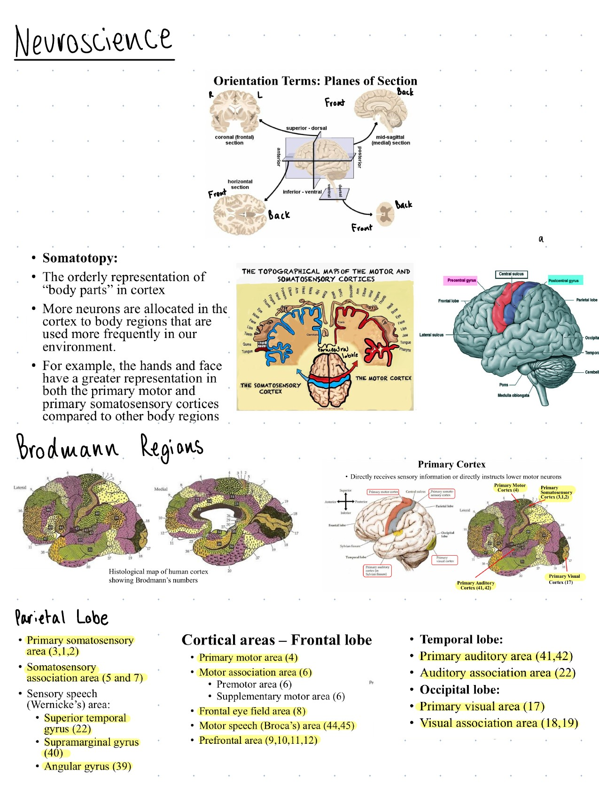
Neuroscience.pdf [summary] · p.1 · tap to enlarge
Orientation terms — planes of section
- Coronal (frontal), mid-sagittal (medial) and horizontal sections; axes superior–dorsal / inferior–ventral, anterior / posterior (hand-labelled R / L, front / back on each cut).
Somatotopy
- The orderly representation of body parts in cortex.
- More neurons are allocated to body regions used more frequently — hands and face have a greater representation in both primary motor and primary somatosensory cortex.
- Homunculus map of the motor (precentral) and somatosensory (postcentral) cortices; the leg / foot / genitalia sit in the paracentral lobule on the medial surface.
Brodmann regions
- Histological map of the cortex by cytoarchitecture (numbers).
- Primary cortex directly receives sensory information or directly instructs lower motor neurons: primary motor (4), primary somatosensory (3,1,2), primary auditory (41, 42), primary visual (17).
Cortical areas by lobe
- Parietal: primary somatosensory 3,1,2; somatosensory association 5 and 7; sensory speech (Wernicke): superior temporal gyrus 22, supramarginal gyrus 40, angular gyrus 39.
- Frontal: primary motor 4; motor association 6 (premotor 6, supplementary motor 6); frontal eye field 8; motor speech (Broca) 44, 45; prefrontal 9, 10, 11, 12.
- Temporal: primary auditory 41, 42; auditory association 22.
- Occipital: primary visual 17; visual association 18, 19.
Handwritten on this page- 'Front / Back' and 'R / L' written on every plane of section.
⭐ Will be testedArea number → lobe → function; 4 motor · 3-1-2 sensory · 17 visual · 41-42 auditory · 44-45 Broca · 22 Wernicke.
p.2Grey vs white matter · lobes & sulci · insula · cortex typesCortex & orientation
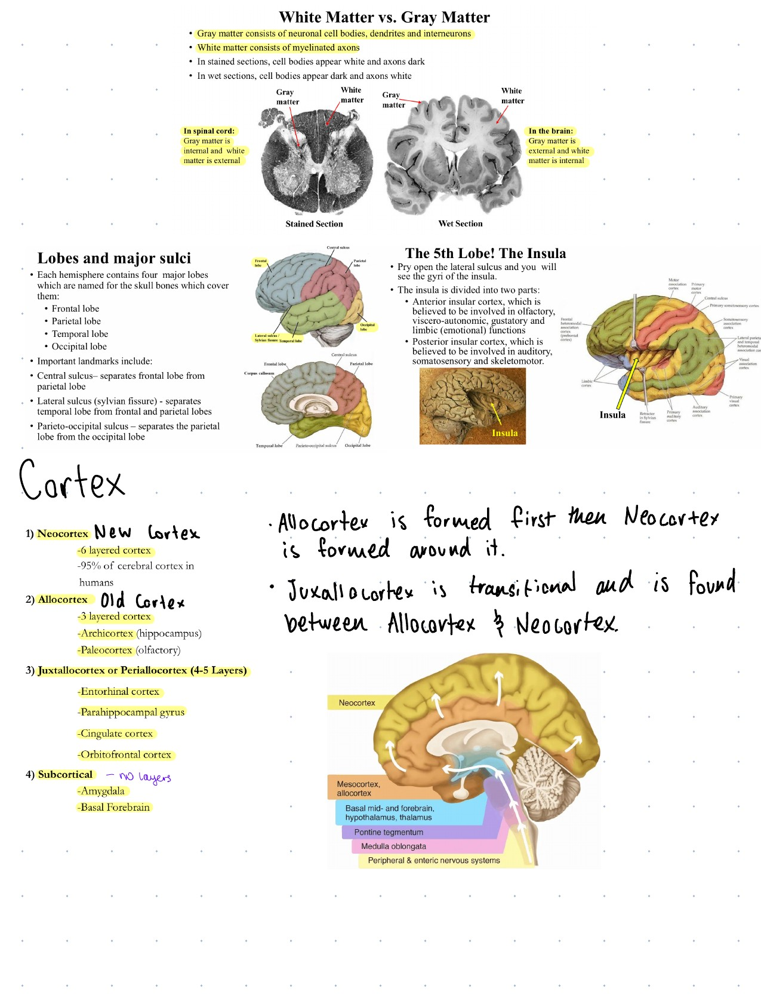
Neuroscience.pdf [summary] · p.2 · tap to enlarge
White matter vs gray matter
- Gray matter = neuronal cell bodies, dendrites and interneurons; white matter = myelinated axons.
- In stained sections cell bodies appear white and axons dark; in wet sections cell bodies dark and axons white.
- Spinal cord: gray internal, white external. Brain: gray external, white internal.
Lobes and major sulci
- Four major lobes named for the skull bones over them: frontal, parietal, temporal, occipital.
- Central sulcus separates frontal from parietal; lateral sulcus (Sylvian fissure) separates temporal from frontal and parietal; parieto-occipital sulcus separates parietal from occipital.
The 5th lobe — the insula
- Pry open the lateral sulcus to see the gyri of the insula.
- Anterior insular cortex: olfactory, viscero-autonomic, gustatory and limbic (emotional) functions.
- Posterior insular cortex: auditory, somatosensory and skeletomotor.
Cortex — four kinds
- 1) Neocortex 'new cortex': 6-layered, 95 % of human cerebral cortex.
- 2) Allocortex 'old cortex': 3-layered — archicortex (hippocampus), paleocortex (olfactory).
- 3) Juxtallocortex / periallocortex (4–5 layers): entorhinal cortex, parahippocampal gyrus, cingulate cortex, orbitofrontal cortex.
- 4) Subcortical — no layers: amygdala, basal forebrain.
- Figure: neocortex over mesocortex / allocortex over basal mid- and forebrain (hypothalamus, thalamus) over pontine tegmentum, medulla, peripheral & enteric nervous systems.
Handwritten on this page- 'Allocortex is formed first then neocortex is formed around it.'
- 'Juxtallocortex is transitional and is found between allocortex & neocortex.'
⭐ Will be testedHippocampus and olfactory cortex are the 3-layer exceptions; insula = anterior (taste / viscera / emotion) vs posterior (hearing / touch / motor).
p.3Six layers · granular vs agranular · columns · association vs commissural fibresCortex & orientation
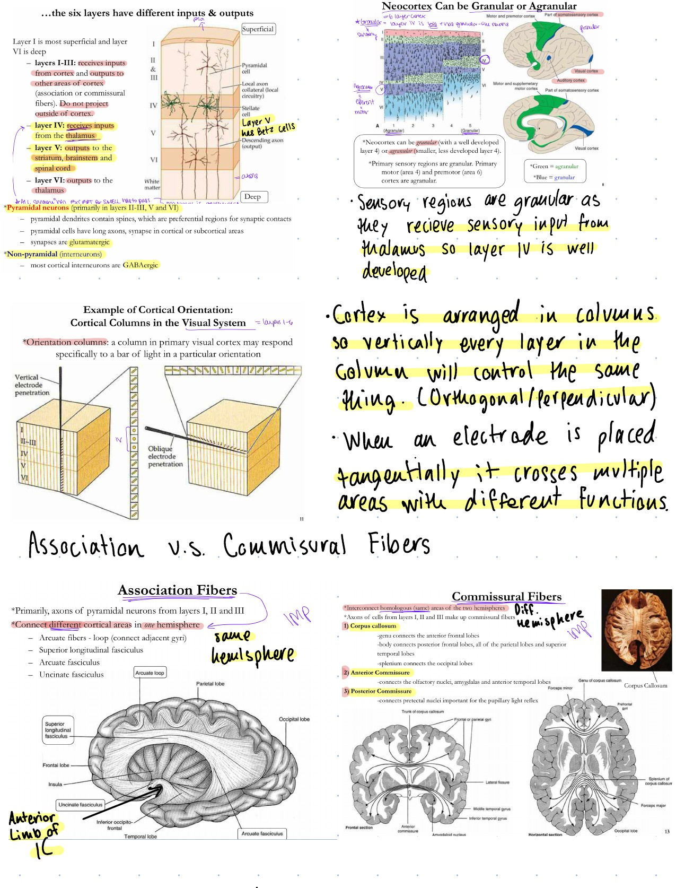
Neuroscience.pdf [summary] · p.3 · tap to enlarge
The six layers have different inputs & outputs
- Layer I is most superficial, VI deep.
- Layers I–III receive inputs from cortex and output to other areas of cortex (association or commissural fibres) — do not project outside cortex.
- Layer IV receives inputs from the thalamus.
- Layer V outputs to the striatum, brainstem and spinal cord.
- Layer VI outputs to the thalamus.
- Pyramidal neurons (primarily II–III, V, VI): spiny dendrites, long axons to cortical or subcortical targets, glutamatergic.
- Non-pyramidal (interneurons): most cortical interneurons are GABAergic.
Neocortex can be granular or agranular
- Granular = well-developed layer 4 (primary sensory regions); agranular = smaller layer 4 (primary motor area 4, premotor area 6).
- Green = agranular, blue = granular on the medial / lateral maps.
Cortical columns (visual-system example)
- Orientation columns: a column in primary visual cortex responds to a bar of light in one orientation; a vertical electrode stays in one column, an oblique penetration crosses several.
Association fibres
- Axons of pyramidal neurons from layers I, II, III; connect different cortical areas in one hemisphere: arcuate fibres (loop between adjacent gyri), superior longitudinal fasciculus, arcuate fasciculus, uncinate fasciculus; inferior occipito-frontal fasciculus on the figure.
Commissural fibres
- Interconnect homologous (same) areas of the two hemispheres; axons from layers I, II, III.
- 1) Corpus callosum: genu → anterior frontal lobes; body → posterior frontal, all parietal, superior temporal; splenium → occipital lobes (forceps minor / major).
- 2) Anterior commissure: olfactory nuclei, amygdalas, anterior temporal lobes.
- 3) Posterior commissure: connects the pretectal nuclei — pupillary light reflex.
Handwritten on this page- 'Layer V has Betz cells'; 'IV receives from thalamus'.
- 'Sensory regions are granular as they receive sensory input from thalamus so layer IV is well developed.'
- 'Cortex is arranged in columns so vertically every layer in the column will control the same thing (orthogonal / perpendicular). When an electrode is placed tangentially it crosses multiple areas with different functions.'
- 'Same hemisphere' (association) vs 'diff. hemisphere' (commissural) — both marked IMP; 'anterior limb of IC' arrow on the fibre figure.
⭐ Will be testedIV in from thalamus, V out to cord, VI out to thalamus; posterior commissure = consensual light reflex.
p.4Projection fibres / internal capsule · radial glia · migration disordersCortex & orientation
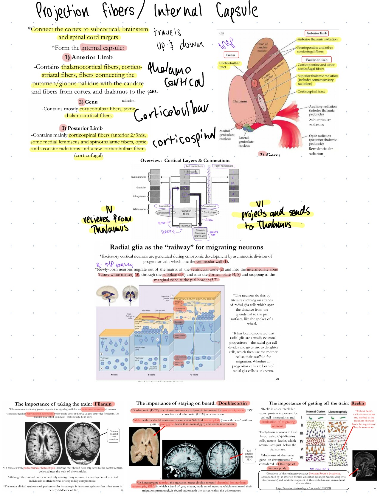
Neuroscience.pdf [summary] · p.4 · tap to enlarge
Projection fibres / internal capsule
- Connect the cortex to subcortical, brainstem and spinal-cord targets; form the internal capsule.
- 1) Anterior limb: thalamocortical fibres, cortico-striatal fibres, fibres connecting putamen / globus pallidus with the caudate, cortex and thalamus → pons (frontopontine).
- 2) Genu: mostly corticobulbar, some thalamocortical.
- 3) Posterior limb: mainly corticospinal (anterior ⅔), some medial lemniscus and spinothalamic fibres, optic and acoustic radiations and a few corticobulbar fibres (corticofugal).
- Figure labels: anterior thalamic radiation, frontopontine, corticopontine, superior thalamic radiation (somatosensory), auditory radiation (sublenticular), optic radiation (retrolenticular).
Overview: cortical layers & connections
- Supragranular (I–III) intracortical / association / commissural; granular IV corticopetal from thalamus; infragranular V → striatum, brainstem, spinal cord; VI → thalamus.
Radial glia as the 'railway' for migrating neurons
- Excitatory cortical neurons are generated by asymmetric division of progenitors lining the ventricular wall; new-born neurons leave the ventricular zone → intermediate zone (future white matter) → subplate → cortical plate → stop in the marginal zone at the pial border.
- They climb strands of radial glia that span ependyma to pia like spokes; radial glia are themselves neuronal progenitors.
Taking the train — Filamin
- Actin-binding protein for initiation of migration; mutation → periventricular heterotopia (FLNA, X-linked dominant — males die in utero; females have neurons collected near the ventricles, intelligence normal or mildly compromised, late-onset epilepsy in the second decade).
Staying on board — Doublecortin
- Microtubule-associated protein for proper migration (LISX1); males: X-linked lissencephaly ('smooth brain', no gyri) or pachygyria with severe retardation; heterozygote females: double cortex (subcortical laminar band heterotopia, SBH).
Getting off the train — Reelin
- Extracellular-matrix protein for cell–cell interaction and termination of migration, secreted by Cajal-Retzius cells under the pia; chromosome 7, LIS2; Norman-Roberts syndrome: inverted cortical lamination (younger neurons deeper), underdeveloped cerebellum, craniofacial abnormalities.
Handwritten on this page- 'travels up & down'; 'thalamocortical' beside the anterior limb, 'corticobulbar' beside the genu, 'corticospinal' beside the posterior limb (IMP).
- 'IV receives from thalamus'; 'VI projects and sends to thalamus'; 'IMP pathway' on the radial-glia figure.
- 'Not long, no gyri' beside lissencephaly.
⭐ Will be testedGenu = corticobulbar, posterior limb = corticospinal; filamin / DCX / reelin = can't board / can't stay / can't get off.
p.5top of the pageNeural pruning · neuroplasticity · adult neurogenesisCortex & orientation

Neuroscience.pdf [summary] · p.5 · tap to enlarge · this page also appears under Ventricles, CSF & meninges
Neural pruning
- The cortex overproduces neurons (about twice as many as needed); they compete for neurotrophic factors and those that acquire enough survive — selection of the 'fittest', most useful synapses.
Neuroplasticity
- The brain changes with the environment over time (Marian Diamond: newness, challenge, exercise, diet and love).
- Blindfold someone for 2 days and the visual cortex re-organises to process sound and touch; a removed limb bud → 50 % of motor neurons survive vs 25 %.
Adult neurogenesis
- Yes — but primarily in two areas: hippocampus & olfactory bulb.
⭐ Will be testedAdult neurogenesis persists only in the hippocampus and olfactory bulb; the cortex overproduces neurons and prunes the ones that lose the competition for trophic factors.
Ventricles, CSF & meninges4 pages
p.5rest of the pageVentricular system — parts & choroid plexusVentricles, CSF & meninges
Neuroscience.pdf [summary] · p.5 · tap to enlarge · this page also appears under Cortex & orientation / Ventricles, CSF & meninges
Ventricular system
- Lateral ventricles, 3rd ventricle, 4th ventricle (3-D casts).
- Parts: frontal horn, central part (body), atrium, occipital horn, temporal horn; interventricular (I-V) foramen; interthalamic adhesion through the 3rd; aqueduct; 4th ventricle with lateral recess.
- Choroid plexus of the 3rd and 4th ventricles and of the lateral ventricles (circled on the gross specimen).
Handwritten on this page- 'Ventricles are connected to cisterns also holding CSF.'
- 'Ventricles are where CSF is secreted through choroid plexuses.'
⭐ Will be testedTemporal horn floor = hippocampus + choroid plexus; lateral ventricles → Monro → 3rd → aqueduct → 4th.
p.6Foramina · CSF · lumbar puncture · circulation · communicating hydrocephalusVentricles, CSF & meninges

Neuroscience.pdf [summary] · p.6 · tap to enlarge
Ventricular system: foramina
- Interventricular foramina (Monro), left & right: lateral → third.
- Cerebral aqueduct (Sylvius): third → fourth.
- Median aperture (Magendie): fourth → cerebellomedullary cistern (cisterna magna).
- Lateral apertures (Luschka), left & right: fourth → quadrigeminal cistern (superior cistern / cistern of the great cerebral vein).
Cerebrospinal fluid
- Made by the choroid plexus; clear, colourless, odourless.
- 150 ml adult; 400–500 ml produced and reabsorbed daily.
- Functions: 1 mechanical support (brain 1500 g → ~25 g in CSF, less 'traction' on nerves and vessels); 2 protection — shock absorber, immune cells; 3 metabolic — ionic composition, nutrients, removes metabolites.
- Two parts: internal (lateral ventricles, foramina, 3rd, aqueduct, 4th) = 20 %; external (subarachnoid spaces and cisterns) = 80 %; they communicate via the 4th-ventricle apertures.
Lumbar puncture / spinal tap
- Needle pierces skin → subcutaneous tissue → supraspinous ligament → interspinous ligament → ligamentum flavum → epidural space (internal vertebral venous plexus) → dura → arachnoid → subarachnoid space; CSF drawn from the lumbar cistern.
- Adult L3/L4 or L4/L5; child L4/L5; lying or sitting position.
CSF circulation (8 steps)
- Secreted by the plexus of each lateral ventricle → interventricular foramina → 3rd (plexus adds more) → aqueduct → 4th (adds more) → two lateral + one median aperture → fills the subarachnoid space bathing brain and cord → reabsorbed at arachnoid villi into the dural venous sinuses.
- Choroid plexus → ventricles → subarachnoid space → arachnoid villi → sinuses → internal jugular vein.
Communicating hydrocephalus
- Causes: decreased CSF reabsorption (scarring from meningitis or subarachnoid haemorrhage); increased production (rare — choroid-plexus papilloma, children with a mass in the ventricles); normal-pressure hydrocephalus.
- ↑ CSF → ↑ intracranial pressure; headache; papilloedema; CT hallmark = dilation of ALL ventricles; can cause herniation.
- Key scenario: prior meningitis or SAH + headache + papilloedema on eye exam + enlarged ventricles on CT.
Handwritten on this page- 'The ventricles are connected to one another by various foramina as well as aqueduct.'
⭐ Will be testedMagendie medial → cisterna magna; Luschka lateral → quadrigeminal cistern; ligamentum flavum then dura = the two pops.
p.7NPH · causes of non-communicating hydrocephalus · ex vacuoVentricles, CSF & meninges

Neuroscience.pdf [summary] · p.7 · tap to enlarge
Normal pressure hydrocephalus
- Enlarged ventricles on imaging with normal opening pressure on LP; compression of the corona radiata, stretching of descending cortical fibres; suspected mechanism impaired CSF absorption.
- Dementia; urinary incontinence; abnormal gait — wide-based, gait apraxia (difficulty initiating walking), magnetic gait (feet stuck to floor). Classic triad wet, wobbly and wacky.
- Resolves with removal of CSF — lumbar puncture, ventriculoperitoneal (VP) shunt draining CSF to the abdomen.
Aqueductal stenosis
- Stenosis of the cerebral aqueduct blocks 3rd → 4th: lateral and third dilated, fourth normal or small.
- Congenital narrowing (X-linked, boys) or intrauterine infection (rubella, CMV, toxoplasmosis, syphilis); presents with enlarging head circumference.
Colloid cyst
- Benign slow-growing cyst at the roof of the third ventricle blocking the foramen of Monro; unilateral block → one lateral ventricle enlarges, bilateral → both; third and fourth remain normal; presents in young adults (20s–50s).
Chiari II malformation
- Downward displacement of the cerebellum — vermis (midline), tonsils (small rounded lobes on the inferior surface), sometimes brainstem (medulla) — through the foramen magnum; brainstem compression may occur.
- Non-communicating: lateral and third enlarged, fourth small / compressed; believed to be from a neural tube defect. MRI: small posterior fossa, crowding of the foramen magnum, markedly low cerebellar tonsils.
Dandy-Walker malformation
- Developmental anomaly of the fourth ventricle; hypoplasia or agenesis of the cerebellar vermis; cysts of the 4th ventricle → hydrocephalus (massive 4th, small cerebellum, enlarged lateral and third).
- Affected children: hydrocephalus (macrocephaly), delayed development, motor dysfunction (crawling, walking); MRI: elevated torcula, vermis hypoplasia, large posterior-fossa cyst communicating with the 4th.
Hydrocephalus ex vacuo
- Enlargement of all ventricles with age as the cortex atrophies, worsened by Alzheimer's or other neurodegeneration; ventricles enlarge in proportion to the sulci — out of proportion = true hydrocephalus; brain atrophy starts in the 30s–40s.
Handwritten on this page- 'Enlargement is caused by ↑ volume of CSF due to compensatory production' (ex vacuo).
⭐ Will be testedWhere the block sits tells you which ventricles dilate: Monro → lateral only; aqueduct → lateral + 3rd; 4th outlets → all.
p.8Epidural vs subdural haematoma · sources of bleeding · brain herniations · ChiariVentricles, CSF & meninges

Neuroscience.pdf [summary] · p.8 · tap to enlarge
Spaces in the cranial meninges
- Epidural = potential space between dura and skull; subdural = potential space in the innermost dural layer near the dura–arachnoid interface; subarachnoid = normally present, CSF-filled, enlarged in cisterns. Bleeding can open up potential meningeal spaces.
Epidural vs subdural haematoma
- Epidural: rapidly expanding arterial blood from a torn middle meningeal artery after skull fracture; dura pushed away from the skull.
- Subdural: slowly expanding venous blood from a torn bridging vein; the dura is attached to the skull so the bleed cannot cross the falx / tentorium.
Source of blood → nature of bleed
- Meningeal artery → epidural haematoma.
- Dural venous sinus → subdural or epidural haematoma.
- Vein at its attachment to a sinus (bridging vein) → subdural haematoma.
- Cerebral artery or vein → subarachnoid, intraparenchymal or intraventricular haemorrhage.
Brain herniations following injury
- Supratentorial (above the tentorial notch): 1 central (transtentorial); 2 uncal (transtentorial) — can result in coma / death; 3 cingulate (subfalcine); 4 transcalvarial.
- Infratentorial: 1 upward cerebellar (transtentorial); 2 downward cerebellar — tonsillar — rapidly fatal.
Chiari malformation
- Cerebellar tonsils forced down into the foramen magnum / spinal canal because of abnormal development or lack of space in the cranial vault; several types of increasing severity that may affect the brainstem.
- Type II (Arnold-Chiari): cerebellar vermal displacement with hydrocephalus and possible spina bifida.
Handwritten on this page- 'Middle' (meningeal artery) and 'Bridging' (vein) written beside the source table.
- Page ends with the handwritten 'CNS Blood Supply' heading for the next chapter.
⭐ Will be testedMiddle meningeal = epidural (lens); bridging vein = subdural (crescent); tonsillar herniation kills by medullary compression.
CNS blood supply & stroke syndromes3 pages
p.9Internal carotid & vertebrobasilar branches · Wallenberg · lateral/medial vessel gridCNS blood supply & stroke syndromes
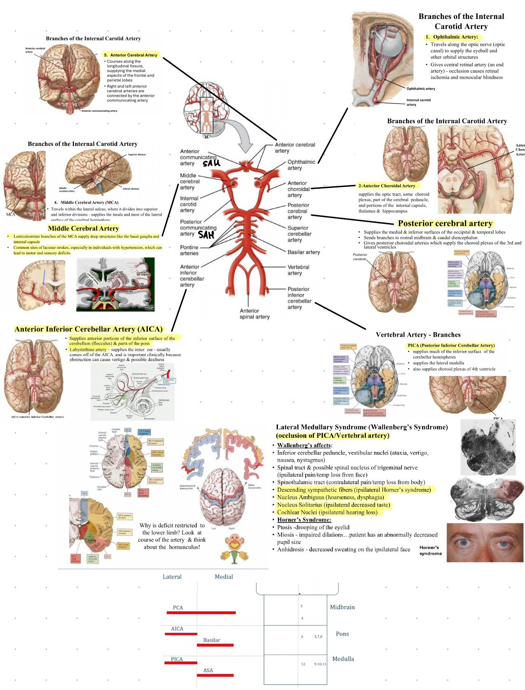
Neuroscience.pdf [summary] · p.9 · tap to enlarge
Branches of the internal carotid artery
- 1) Ophthalmic artery: travels along the optic nerve (optic canal) to the eyeball and orbit; gives the central retinal artery (an end artery) — occlusion causes retinal ischaemia and monocular blindness.
- 2) Anterior choroidal artery: optic tract, some choroid plexus, part of the cerebral peduncle, portions of the internal capsule, thalamus and hippocampus.
- 4) Middle cerebral artery: travels in the lateral sulcus, divides into superior and inferior divisions; supplies the insula and most of the lateral hemisphere. Lenticulostriate branches supply deep structures (basal ganglia, internal capsule) — common site of lacunar strokes in hypertension → motor and sensory deficits.
- 5) Anterior cerebral artery: along the longitudinal fissure, medial frontal and parietal lobes; right and left joined by the anterior communicating artery.
Circle of Willis figure
- ACom, ACA, MCA, ICA, PCom, ophthalmic, anterior choroidal, PCA, superior cerebellar, basilar, pontine arteries, AICA, vertebral, PICA, anterior spinal artery — with 'SAH' written at the ACom and PCom aneurysm sites.
Posterior cerebral artery
- Medial and inferior surfaces of the occipital and temporal lobes; branches to the rostral midbrain and caudal diencephalon; posterior choroidal arteries to the plexus of the 3rd and lateral ventricles.
Anterior inferior cerebellar artery
- Anterior inferior cerebellar surface (flocculus) and parts of the pons; the labyrinthine artery usually arises from AICA — obstruction causes vertigo and possible deafness.
Vertebral artery — PICA
- Much of the inferior cerebellar hemispheres, the lateral medulla and the choroid plexus of the 4th ventricle.
Lateral medullary (Wallenberg) syndrome — PICA / vertebral occlusion
- Inferior cerebellar peduncle + vestibular nuclei (ataxia, vertigo, nausea, nystagmus); spinal tract ± nucleus of V (ipsilateral face pain/temp loss); spinothalamic tract (contralateral body pain/temp loss); descending sympathetics (ipsilateral Horner); nucleus ambiguus (hoarseness, dysphagia); nucleus solitarius (ipsilateral decreased taste); cochlear nuclei (ipsilateral hearing loss).
- Horner's: ptosis, miosis (abnormally small pupil, impaired dilation), anhidrosis of the ipsilateral face.
Territory figures
- Coronal / axial territory maps (ACA, MCA superior / inferior / deep, PCA, anterior choroidal) and the motor–sensory homunculus over the ACA / MCA border: 'Why is the deficit restricted to the lower limb? Look at the course of the artery & think about the homunculus!'
Lateral vs medial vessel grid
- PCA lateral — midbrain (3, 4). AICA lateral / basilar medial — pons (6 · 5, 7, 8). PICA lateral / ASA medial — medulla (12 · 9, 10, 11).
Handwritten on this page- 'SAH' written twice on the circle of Willis at the ACom and the PCom / ICA junction.
⭐ Will be testedLabyrinthine artery = AICA; nucleus ambiguus = PICA; medial nerves (3, 4, 6, 12) go with the midline arteries.
p.10Weber · Benedikt · lateral pontine · basilar branches · medial medullary · venous drainage · cavernous sinusCNS blood supply & stroke syndromes
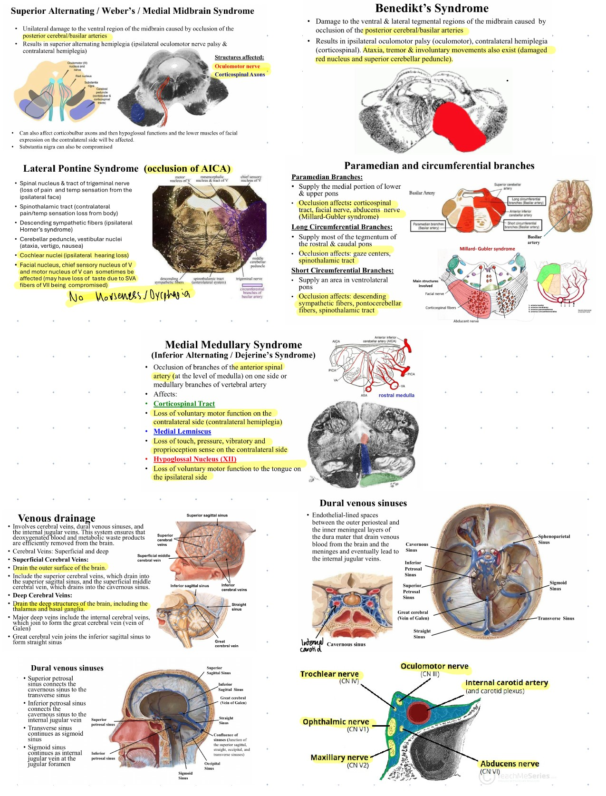
Neuroscience.pdf [summary] · p.10 · tap to enlarge
Superior alternating / Weber's / medial midbrain syndrome
- Unilateral damage to the ventral midbrain from occlusion of posterior cerebral / basilar branches → ipsilateral oculomotor palsy + contralateral hemiplegia; structures: oculomotor nerve, corticospinal axons.
- Can also affect corticobulbar axons → contralateral hypoglossal and lower facial weakness; substantia nigra can be compromised.
Benedikt's syndrome
- Ventral and lateral tegmentum of the midbrain (PCA / basilar) → ipsilateral oculomotor palsy, contralateral hemiplegia, plus ataxia, tremor and involuntary movements (damaged red nucleus and superior cerebellar peduncle).
Lateral pontine syndrome (AICA)
- Spinal nucleus & tract of V (ipsilateral face pain/temp loss); spinothalamic (contralateral body); descending sympathetics (Horner); cerebellar peduncle + vestibular nuclei (ataxia, vertigo, nausea); cochlear nuclei (ipsilateral hearing loss); facial nucleus, chief sensory and motor nuclei of V can be affected (± taste loss from SVA fibres of VII).
Paramedian and circumferential branches of the basilar
- Paramedian: medial lower and upper pons — occlusion hits the corticospinal tract, facial nerve, abducens nerve = Millard-Gubler.
- Long circumferential: most of the tegmentum — gaze centres, spinothalamic tract.
- Short circumferential: ventrolateral pons — descending sympathetics, pontocerebellar fibres, spinothalamic tract.
Medial medullary syndrome (inferior alternating / Dejerine)
- Occlusion of anterior spinal artery branches (or medullary branches of the vertebral): corticospinal tract → contralateral hemiplegia; medial lemniscus → contralateral loss of touch, pressure, vibration, proprioception; hypoglossal nucleus (XII) → ipsilateral tongue weakness.
Venous drainage
- Cerebral veins, dural venous sinuses and internal jugular veins. Superficial cerebral veins drain the outer surface: superior cerebral veins → superior sagittal sinus; superficial middle cerebral vein → cavernous sinus. Deep cerebral veins drain thalamus and basal ganglia: internal cerebral veins → great cerebral vein (Galen) + inferior sagittal sinus → straight sinus.
Dural venous sinuses
- Endothelial-lined spaces between periosteal and meningeal dura → internal jugular veins. Superior petrosal: cavernous → transverse; inferior petrosal: cavernous → IJV; transverse → sigmoid → IJV at the jugular foramen; confluence = superior sagittal + straight + occipital + transverse.
Cavernous sinus cross-section
- Lateral wall: oculomotor (III), trochlear (IV), ophthalmic (V1), maxillary (V2); inside: abducens (VI) and the internal carotid artery with its carotid plexus.
Handwritten on this page- 'No hoarseness / dysphagia' under lateral pontine syndrome.
- 'Internal carotid' written beside the cavernous sinus figure.
⭐ Will be testedWeber = III + CST; Benedikt = + red nucleus; Millard-Gubler = paramedian basilar (VI + VII + CST); AICA = facial palsy + deafness, no dysphagia.
Basal ganglia & diencephalon3 pages
p.11Basal ganglia — terminology · direct / indirect pathways · functions · blood supplyBasal ganglia & diencephalon
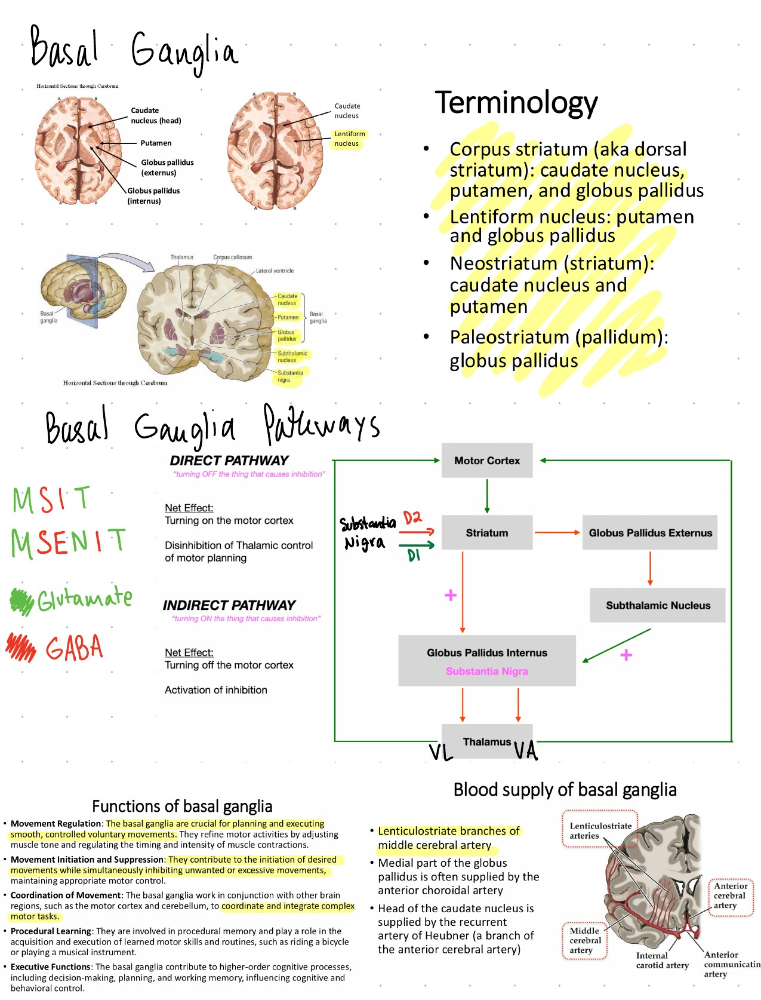
Neuroscience.pdf [summary] · p.11 · tap to enlarge
Terminology
- Corpus striatum (dorsal striatum): caudate nucleus, putamen and globus pallidus.
- Lentiform nucleus: putamen and globus pallidus.
- Neostriatum (striatum): caudate nucleus and putamen.
- Paleostriatum (pallidum): globus pallidus.
- Horizontal and coronal sections: caudate head, putamen, globus pallidus externus / internus, subthalamic nucleus, substantia nigra.
Basal ganglia pathways
- Direct pathway — 'turning OFF the thing that causes inhibition': net effect turns on the motor cortex; disinhibition of thalamic control of motor planning.
- Indirect pathway — 'turning ON the thing that causes inhibition': net effect turns off the motor cortex; activation of inhibition.
- Circuit: motor cortex → striatum ⊣ GPi / SN (direct) or striatum ⊣ GPe ⊣ subthalamic nucleus → GPi (indirect) → thalamus (VL, VA) → motor cortex; substantia nigra → striatum via D2 (indirect) and D1 (direct).
Functions of basal ganglia
- Movement regulation (planning and executing smooth, controlled voluntary movements; tone, timing, intensity); movement initiation and suppression (initiate desired, inhibit unwanted movements); coordination with motor cortex and cerebellum; procedural learning (riding a bicycle, instruments); executive functions (decision-making, planning, working memory).
Blood supply of basal ganglia
- Lenticulostriate branches of the MCA; medial globus pallidus often by the anterior choroidal artery; head of the caudate by the recurrent artery of Heubner (ACA).
Handwritten on this page- Mnemonics 'MSIT' (motor cortex → striatum → GPi → thalamus, direct) and 'MSENIT' (→ GPe → STN → GPi → thalamus, indirect); green = glutamate, red = GABA; 'Substantia nigra D2 / D1' arrows onto the striatum; 'VL / VA' under the thalamus.
⭐ Will be testedSTN is the only excitatory node inside the loop; SNc dopamine excites D1 (go) and inhibits D2 (no-go).
p.12Major diseases of the basal ganglia · diencephalon regions · epithalamus · subthalamusBasal ganglia & diencephalon
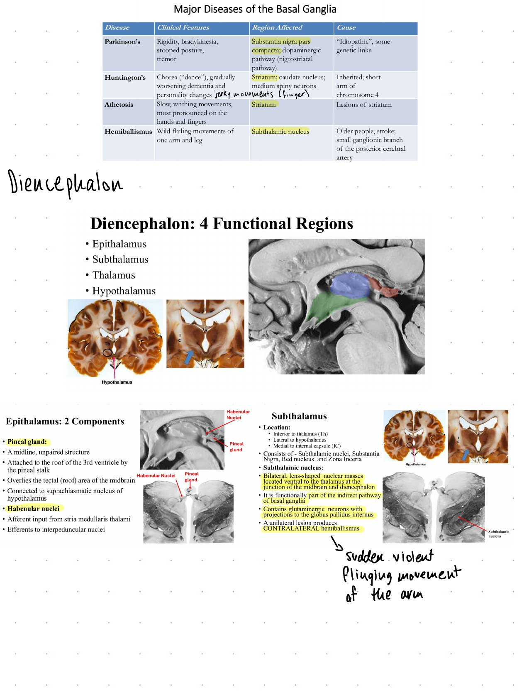
Neuroscience.pdf [summary] · p.12 · tap to enlarge
Major diseases of the basal ganglia
- Parkinson's: rigidity, bradykinesia, stooped posture, tremor — substantia nigra pars compacta (nigrostriatal dopaminergic pathway); 'idiopathic', some genetic links.
- Huntington's: chorea ('dance'), gradually worsening dementia and personality changes — striatum (caudate; medium spiny neurons); inherited, short arm of chromosome 4.
- Athetosis: slow writhing movements, hands and fingers — striatum lesions.
- Hemiballismus: wild flailing of one arm and leg — subthalamic nucleus; older people, stroke of a small ganglionic branch of the PCA.
Diencephalon: 4 functional regions
- Epithalamus, subthalamus, thalamus, hypothalamus (coloured on the mid-sagittal specimen; Th and hypothalamus on coronal sections).
Epithalamus: 2 components
- Pineal gland: midline, unpaired; attached to the roof of the 3rd ventricle by the pineal stalk; overlies the tectum; connected to the suprachiasmatic nucleus.
- Habenular nuclei: afferents from the stria medullaris thalami; efferents to the interpeduncular nuclei.
Subthalamus
- Inferior to the thalamus, lateral to the hypothalamus, medial to the internal capsule; contains the subthalamic nuclei, substantia nigra, red nucleus and zona incerta.
- Subthalamic nucleus: bilateral lens-shaped masses ventral to the thalamus at the midbrain–diencephalon junction; part of the indirect pathway; glutaminergic projections to GPi; unilateral lesion → contralateral hemiballismus.
Handwritten on this page- 'jerky movements (finger)' next to Huntington's chorea.
- 'sudden violent flinging movement of the arm' under hemiballismus.
⭐ Will be testedSite → disease: SNc Parkinson, caudate Huntington, STN hemiballismus.
p.13Pineal gland · thalamic nuclei table · thalamic blood supply · Dejerine-Roussy · hypothalamic nucleiBasal ganglia & diencephalon
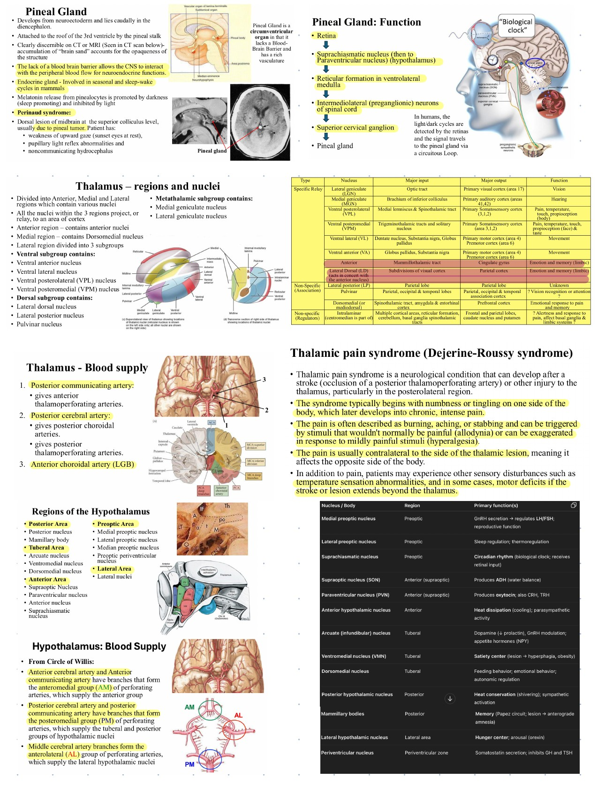
Neuroscience.pdf [summary] · p.13 · tap to enlarge
Pineal gland
- Develops from neuroectoderm, lies caudally in the diencephalon; attached to the roof of the 3rd ventricle; visible on CT / MRI because 'brain sand' calcifies.
- A circumventricular organ — lacks a blood–brain barrier and has rich vasculature, so the CNS interacts with peripheral blood for neuroendocrine functions; endocrine gland for seasonal and sleep–wake cycles; melatonin from pinealocytes is promoted by darkness and inhibited by light.
- Parinaud syndrome: dorsal midbrain lesion at the superior colliculus, usually pineal tumour — weakness of upward gaze (sunset eyes), pupillary light-reflex abnormalities, non-communicating hydrocephalus.
Pineal gland: function ('biological clock')
- Retina → suprachiasmatic nucleus (then paraventricular nucleus) → reticular formation in the ventrolateral medulla → intermediolateral (preganglionic) neurons of the cord → superior cervical ganglion → pineal gland — 'a circuitous loop'.
Thalamus — regions and nuclei
- Anterior, medial and lateral regions; every nucleus relays to cortex. Anterior region: anterior nuclei; medial: dorsomedial; lateral: ventral subgroup (VA, VL, VPL, VPM) and dorsal subgroup (lateral dorsal, lateral posterior, pulvinar); metathalamic: MGN, LGN.
Thalamic nuclei table
- Specific relay — LGN: optic tract → area 17 (vision); MGN: brachium of inferior colliculus → 41, 42 (hearing); VPL: medial lemniscus & spinothalamic → 3,1,2 (pain, temperature, touch, proprioception — body); VPM: trigeminothalamic + solitary nucleus → 3,1,2 (face + taste); VL: dentate, SN, GP → 4, 6 (movement); VA: GP, SN → 4, 6; anterior: mammillothalamic tract → cingulate (emotion, memory, limbic); lateral dorsal: visual cortex subdivisions → parietal (limbic).
- Non-specific (association) — lateral posterior: parietal ↔ parietal; pulvinar: parietal / occipital / temporal → association cortex (vision recognition / attention?); dorsomedial: spinothalamic, amygdala, entorhinal → prefrontal (emotional response to pain, memory).
- Non-specific (regulators) — intralaminar (centromedian): cortex, RF, cerebellum, BG, spinothalamic → frontal / parietal, caudate, putamen (alertness, pain response, BG and limbic modulation).
Thalamus — blood supply
- 1 posterior communicating → anterior thalamoperforating; 2 posterior cerebral → posterior choroidal + posterior thalamoperforating; 3 anterior choroidal (LGB).
Thalamic pain syndrome (Dejerine-Roussy)
- After a stroke (posterior thalamoperforating artery) or injury to the posterolateral thalamus; starts as numbness / tingling on one side then chronic intense burning, aching or stabbing pain; allodynia and hyperalgesia; pain contralateral to the lesion; ± temperature-sense abnormalities and motor deficits if the lesion extends.
Regions of the hypothalamus
- Posterior area: posterior nucleus, mammillary body. Tuberal: arcuate, ventromedial, dorsomedial. Anterior: supraoptic, paraventricular, anterior, suprachiasmatic. Preoptic: medial, lateral, median preoptic, preoptic periventricular. Lateral area: lateral nuclei.
Hypothalamus: blood supply
- ACA + ACom → anteromedial (AM) perforators → anterior group; PCA + PCom → posteromedial (PM) → tuberal and posterior groups; MCA → anterolateral (AL) → lateral nuclei.
Hypothalamic nuclei — function table
- Medial preoptic: GnRH → LH / FSH; lateral preoptic: sleep, thermoregulation; suprachiasmatic: circadian rhythm (retinal input); supraoptic: ADH; paraventricular: oxytocin (+ CRH, TRH); anterior: heat dissipation, parasympathetic; arcuate: dopamine (↓ prolactin), GnRH modulation, appetite (NPY); ventromedial: satiety (lesion → hyperphagia, obesity); dorsomedial: feeding, emotional behaviour, autonomic; posterior: heat conservation (shivering), sympathetic; mammillary bodies: memory (Papez; lesion → anterograde amnesia); lateral hypothalamic: hunger centre, arousal (orexin); periventricular: somatostatin (inhibits GH, TSH).
Handwritten on this page- 'Metathalamic subgroup contains MGN, LGN' highlighted; AM / AL / PM circles on the circle-of-Willis sketch.
⭐ Will be testedVPM = face + taste, VPL = body; anterior nucleus = Papez; ventromedial satiety vs lateral hunger.
Cerebellum3 pages
p.14Cerebellum — classifications, deficits · deep nuclei · cortex layers & cell typesCerebellum
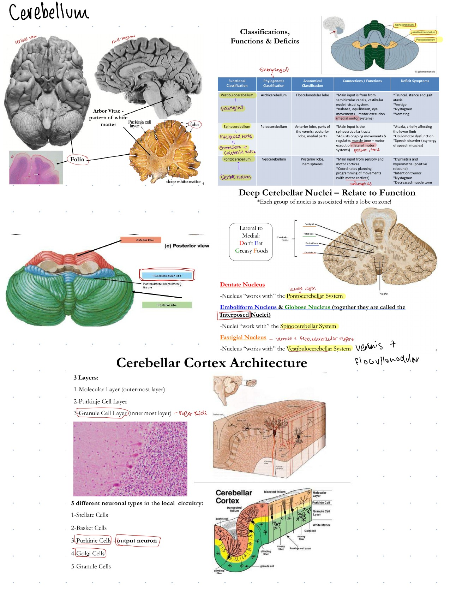
Neuroscience.pdf [summary] · p.14 · tap to enlarge
Gross views
- Ventral and mid-sagittal views: arbor vitae (white-matter pattern), folia, deep white matter, Purkinje cell layer on the histology inset.
Classifications, functions & deficits
- Vestibulocerebellum = archicerebellum = flocculonodular lobe: input from semicircular canals, vestibular nuclei, visual system; balance, equilibrium, eye movements — motor execution (medial motor systems); deficits: truncal, stance and gait ataxia, vertigo, nystagmus, vomiting.
- Spinocerebellum = paleocerebellum = anterior lobe, parts of the vermis, medial posterior lobe: input from spinocerebellar tracts; adjusts ongoing movements, regulates muscle tone (lateral motor systems); deficits: ataxia chiefly of the lower limb, oculomotor dysfunction, speech disorder (asynergy of speech muscles).
- Pontocerebellum = neocerebellum = posterior lobe, hemispheres: input from sensory and motor cortices; planning and programming of movements with motor cortices; deficits: dysmetria and hypermetria (positive rebound), intention tremor, nystagmus, decreased tone.
Deep cerebellar nuclei — relate to function
- Lateral to medial: Don't Eat Greasy Foods — dentate, emboliform, globose, fastigial.
- Dentate works with the pontocerebellar system; emboliform + globose (= interposed nuclei) with the spinocerebellar system; fastigial with the vestibulocerebellar system.
Cerebellar cortex architecture
- 3 layers: molecular (outermost), Purkinje cell layer, granule cell layer (innermost).
- 5 neuronal types in the local circuitry: stellate, basket, Purkinje (output neuron), Golgi, granule cells; mossy and climbing fibres enter, Purkinje axons leave.
Handwritten on this page- 'Embryological' over the phylogenetic column; 'fastigial', 'interposed nuclei = emboliform + globose', 'dentate nucleus' beside each functional row; 'posture, tone', 'corticospinal' annotations; 'vermis + flocculonodular' beside fastigial; 'lateral region' beside dentate; 'next slide' beside the granule layer.
⭐ Will be testedMidline (vermis / flocculonodular) lesion = truncal ataxia; hemisphere lesion = ipsilateral limb ataxia; dentate ↔ hemispheres.
p.15Cerebellar circuitry · the three spinocerebellar pathwaysCerebellum
Cerebellar circuit diagram
- Inhibitory cortical side loop: parallel fibres, basket cell, stellate cell, Golgi cell, granule cell, Purkinje cell. Main excitatory loop: precerebellar nucleus cell (spinocerebellar pathways, brainstem reticular nuclei, pontine nuclei) → mossy fibre; inferior olivary nucleus → climbing fibre; both → deep cerebellar neurons → descending motor systems.
3 ascending pathways
- 1 Anterior (ventral) spinocerebellar: Golgi tendon organs, muscle spindles, spinal interneurons, cutaneous receptors and descending-tract fibres from the LOWER (distal) extremities — more related to intended movement.
- 2 Posterior (dorsal) spinocerebellar: spindles and GTOs — individual muscles of the LOWER (proximal) extremities.
- 3 Cuneocerebellar: spindles and GTOs — individual muscles of the UPPER extremities.
Anterior (ventral) spinocerebellar
- 1st order DRG (fibres via fasciculus gracilis) → 2nd order spinal border cells (lumbar anterior horn, lamina VII) → cross in the anterior white commissure, ascend in the anterior lateral funiculus, cross again in the brainstem → superior cerebellar peduncle → cerebellum.
Posterior (dorsal) spinocerebellar
- DRG (fasciculus gracilis) → Clarke's nucleus (column) T1–L2 → dorsal spinocerebellar tract (lateral funiculus) → inferior cerebellar peduncle → cerebellum.
Cuneocerebellar
- DRG (fasciculus cuneatus) → lateral (external, accessory) cuneate nucleus → cuneocerebellar tract → inferior cerebellar peduncle → cerebellum.
Handwritten on this page- 'Excitatory mossy & climbing fibres act on the granule cell which then sends excitatory signals to Golgi, basket and stellate cells. Basket and stellate cells send an inhibitory signal to the Purkinje cells. At the same time mossy & climbing also send excitatory signals to Purkinje cells. Purkinje cells receive all signals and produce an appropriate response to deep cerebellar nucleus.'
- 'Has restiform / juxtarestiform body' beside the ICP; a brace under all three pathways: 'All are ipsilateral'.
⭐ Will be testedVentral spinocerebellar double-crosses and uses the SCP; dorsal (Clarke) and cuneocerebellar use the ICP; net effect ipsilateral.
p.16top of the pageGeneral plan of cerebellar pathways · ataxias · FriedreichCerebellum
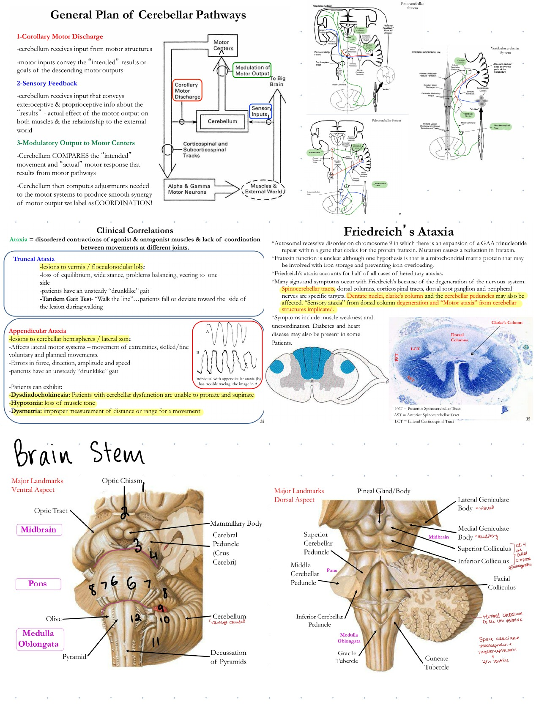
Neuroscience.pdf [summary] · p.16 · tap to enlarge · this page also appears under Cerebellum / Brainstem cross-sections
General plan of cerebellar pathways
- 1 corollary motor discharge: input from motor structures conveying the 'intended' results; 2 sensory feedback: exteroceptive and proprioceptive info about the 'results' on muscles and the external world; 3 modulatory output to motor centres: the cerebellum COMPARES intended vs actual and computes adjustments → smooth synergy = COORDINATION.
- Diagrams of the neocerebellar (pontocerebellar), paleocerebellar and vestibulocerebellar systems.
Clinical correlations — ataxia
- Ataxia = disordered contractions of agonist and antagonist muscles, lack of coordination between joints.
- Truncal ataxia: lesions of vermis / flocculonodular lobe — loss of equilibrium, wide stance, veering to one side, unsteady 'drunk-like' gait; tandem gait test — patients fall toward the side of the lesion.
- Appendicular ataxia: lesions of cerebellar hemispheres / lateral zone — lateral motor systems, skilled / fine planned movements; errors in force, direction, amplitude, speed; dysdiadochokinesia (can't pronate / supinate), hypotonia, dysmetria; can't trace figure A.
Friedreich's ataxia
- Autosomal recessive, chromosome 9, GAA trinucleotide expansion in the frataxin gene → reduced frataxin (mitochondrial matrix protein, iron storage); half of all hereditary ataxias.
- Degeneration of spinocerebellar tracts, dorsal columns, corticospinal tracts, dorsal root ganglia and peripheral nerves; dentate nuclei, Clarke's column and cerebellar peduncles may be affected; 'sensory ataxia' (dorsal columns) + 'motor ataxia' (cerebellar); muscle weakness, diabetes and heart disease. Stained cord: PST, AST, LCT, dorsal columns, Clarke's column labelled.
⭐ Will be testedFall toward the side of the lesion; Friedreich = spinocerebellar + dorsal columns + CST + DRG.
Brainstem cross-sections3 pages
p.16rest of the pageBrainstem — major landmarks, ventral & dorsalBrainstem cross-sections
Neuroscience.pdf [summary] · p.16 · tap to enlarge · this page also appears under Cerebellum
Brain stem — major landmarks, ventral aspect
- Optic chiasm (I), optic tract (II), mammillary body, cerebral peduncle (crus cerebri), III, IV; pons with V, VI, VII, VIII; olive, XII between pyramid and olive, IX, X, XI behind the olive; pyramid, decussation of pyramids; cerebellum.
Major landmarks, dorsal aspect
- Pineal gland, lateral geniculate body (visual), medial geniculate body (auditory), superior and inferior colliculi (corpora quadrigemina), superior / middle / inferior cerebellar peduncles, facial colliculus, gracile and cuneate tubercles, 4th ventricle floor (cerebellum removed).
Handwritten on this page- '8 7 6 / 6 7 8' and '9 10 12 11' numbered on the ventral brainstem; 'olive — 12 always caudal'; 'all 4 are called corpora quadrigemina'; 'LGB = visual, MGB = auditory'; 'removed cerebellum to see 4th ventricle'; 'space associated with metencephalon + myelencephalon = 4th ventricle'.
⭐ Will be testedXII exits between pyramid and olive, IX–XI behind the olive; LGB = visual, MGB = auditory; the four colliculi = corpora quadrigemina.
p.17Caudal medulla · rostral medulla · lower ponsBrainstem cross-sections
Caudal medulla (level of the decussations)
- Stained section (R / L, dorsal / ventral; NG = nucleus gracilis, NC = nucleus cuneatus) beside the labelled diagram: nucleus gracilis, nucleus cuneatus, accessory cuneate nucleus, medial longitudinal fasciculus, spinal tract and spinal nucleus of CN V, central canal, fibres of CN X, reticular formation, nucleus ambiguus, spinothalamic tracts, posterior and anterior spinocerebellar tracts, inferior olivary nucleus, pyramid, decussation of the medial lemniscus (internal arcuate fibres).
Rostral medulla (open part, 4th ventricle)
- Hypoglossal nucleus, dorsal motor nucleus of CN X, solitary nucleus, medial and inferior vestibular nuclei, fourth ventricle, MLF, tectospinal tract, inferior cerebellar peduncle, spinal nucleus and tract of CN V, reticular formation, nucleus ambiguus, lateral spinothalamic tract, inferior olivary nucleus (traced in red on the section), medial lemniscus, CN XII root, pyramid.
Lower pons
- Nissl-stained section (cerebellum and 4th ventricle circled): genu of the facial nerve around the abducens nucleus = facial colliculus; MLF; fourth ventricle; inferior cerebellar peduncle; vestibular nuclei (lateral and superior); spinal nucleus and tract of V; solitary nucleus and tract; middle cerebellar peduncle; spinothalamic tracts; facial nucleus of CN VII; transverse pontine fibres and deep pontine nuclei; central tegmental tract; medial lemniscus; trapezoid body; corticobulbar and corticospinal tracts.
Handwritten on this page- '4th ventricle', 'inferior cerebellar peduncle', 'inferior olivary nucleus' arrowed on the rostral-medulla section.
- 'Large middle cerebellar peduncle' with a red arrow on the lower-pons section.
⭐ Will be testedCaudal medulla = both decussations; rostral medulla = olive + XII + ICP; lower pons = facial colliculus (VI nucleus + VII genu) + trapezoid body.
p.18top of the pageUpper pons · caudal & rostral midbrainBrainstem cross-sections
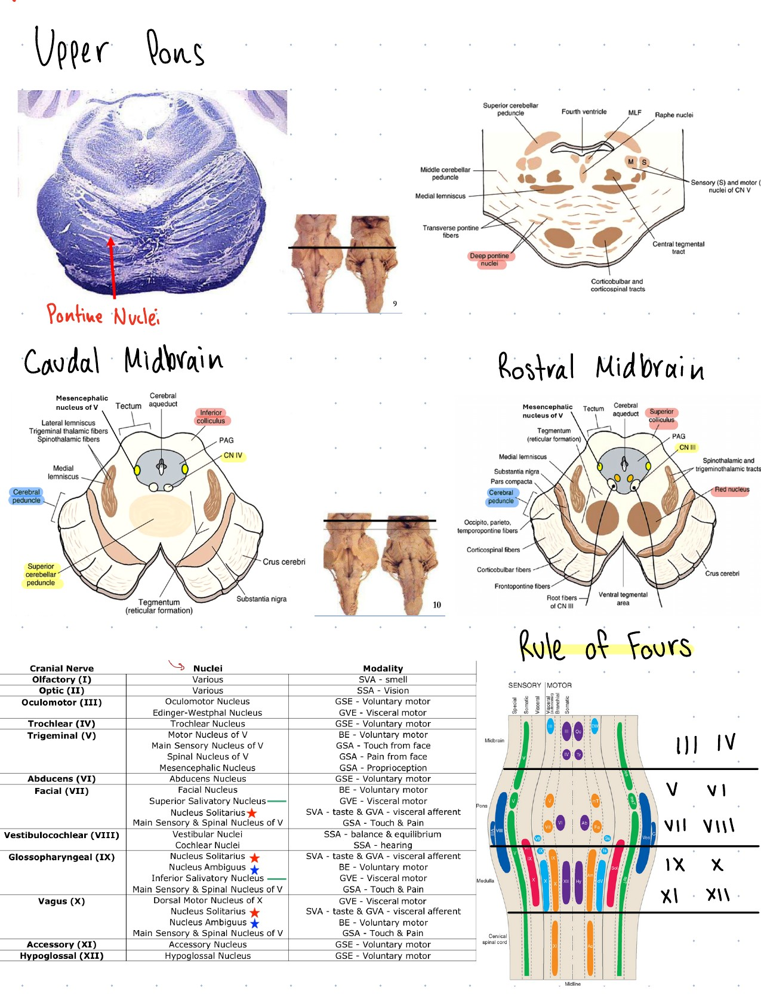
Neuroscience.pdf [summary] · p.18 · tap to enlarge · this page also appears under Brainstem cross-sections / Cranial nerves I–VI
Upper pons
- Superior cerebellar peduncle, fourth ventricle, MLF, raphe nuclei, middle cerebellar peduncle, sensory (S) and motor (M) nuclei of CN V, medial lemniscus, transverse pontine fibres, deep pontine nuclei (arrowed 'pontine nuclei' on the Nissl section), central tegmental tract, corticobulbar and corticospinal tracts.
Caudal midbrain (inferior colliculus)
- Mesencephalic nucleus of V, tectum, cerebral aqueduct, inferior colliculus, PAG, CN IV (trochlear nucleus), lateral lemniscus, trigeminal-thalamic and spinothalamic fibres, medial lemniscus, cerebral peduncle: superior cerebellar peduncle (decussating), tegmentum (reticular formation), substantia nigra, crus cerebri.
Rostral midbrain (superior colliculus)
- Mesencephalic nucleus of V, tectum, aqueduct, superior colliculus, PAG, CN III nucleus, tegmentum (reticular formation), medial lemniscus, spinothalamic and trigeminothalamic tracts, substantia nigra (pars compacta), red nucleus, cerebral peduncle with occipito-parieto-temporopontine, corticospinal, corticobulbar and frontopontine fibres, root fibres of CN III, ventral tegmental area, crus cerebri.
⭐ Will be testedIV nucleus sits at the inferior colliculus, III at the superior colliculus; the superior cerebellar peduncles decussate in the caudal midbrain; red nucleus + substantia nigra mark the rostral midbrain.
Cranial nerves I–VI3 pages
p.18rest of the pageCN nuclei ↔ modality table · rule of foursCranial nerves I–VI
Neuroscience.pdf [summary] · p.18 · tap to enlarge · this page also appears under Brainstem cross-sections
Cranial nerve → nuclei → modality
- I: various — SVA smell. II: various — SSA vision. III: oculomotor nucleus GSE, Edinger-Westphal GVE. IV: trochlear nucleus GSE. V: motor nucleus BE; main sensory GSA touch from face; spinal nucleus GSA pain from face; mesencephalic GSA proprioception. VI: abducens GSE. VII: facial nucleus BE; superior salivatory GVE; nucleus solitarius SVA taste + GVA; main sensory & spinal V GSA touch & pain. VIII: vestibular nuclei SSA balance; cochlear nuclei SSA hearing. IX: solitarius SVA + GVA; ambiguus BE; inferior salivatory GVE; main / spinal V GSA. X: dorsal motor nucleus GVE; solitarius SVA + GVA; ambiguus BE; main / spinal V GSA. XI: accessory nucleus GSE. XII: hypoglossal nucleus GSE.
Rule of fours
- Colour-coded longitudinal columns of nuclei: sensory (special, somatic, visceral) lateral, motor (visceral, branchial, somatic) medial, from midbrain to cervical cord; the twelve nerves in pairs by level: III IV (midbrain) · V VI · VII VIII (pons) · IX X · XI XII (medulla).
Handwritten on this page- Green line beside the superior / inferior salivatory nuclei, red star beside nucleus solitarius (VII, IX, X), blue star beside nucleus ambiguus (IX, X) on the table.
- 'III IV / V VI / VII VIII / IX X / XI XII' written against the brainstem levels.
⭐ Will be testedMotor nuclei medial, sensory lateral; solitarius serves VII / IX / X, ambiguus serves IX / X; the twelve nerves pair off by level — III IV midbrain, V–VIII pons, IX–XII medulla.
p.19Olfactory nerve CN I · optic nerve CN IICranial nerves I–VI
Olfactory nerve CN I — pathway
- 1st order = olfactory receptor cells: bipolar neurons; single dendrite ends in the olfactory mucosa as an expanded olfactory knob; single unmyelinated axon penetrates the cribriform plate (these axons do not form a single nerve).
- 2nd order = mitral & tufted cells in the olfactory bulb; form the olfactory tract.
- 3rd order = primary olfactory (piriform) cortex — the olfactory system does not relay through the thalamus.
- Steps: 1 odorants bind receptors; 2 receptor cells fire; 3 relayed in glomeruli; 4 transmitted to higher regions. Targets: olfactory tubercle, piriform cortex, amygdala, entorhinal cortex.
Olfactory system pathway & coding — two tracts
- Lateral olfactory stria: to primary olfactory (piriform) cortex → entorhinal, amygdala, hippocampus (perforant pathway); thalamus → prefrontal cortex.
- Medial olfactory stria: bilaterally to limbic / forebrain structures; contralateral anterior olfactory nucleus, basal forebrain.
CN II — optic nerve
- Only one axon modality: special somatic afferent (SSA); function vision; attached to the eyeball near the posterior pole; formed by axons of retinal ganglion cells; enters the cranial cavity through the optic canal; the two nerves unite as the optic chiasm; lesion = monocular blindness.
- Figures: optic canals in the skull base, optic nerve in the orbit, chiasm → optic tracts → lateral geniculate bodies → optic radiations with overlapping visual fields.
Handwritten on this page- 'No nuclei in the brainstem'; 'SVA – smell'.
- 'Smell is related to memory'; 'Remember CN I goes to piriform cortex first before being used by the thalamus.'
- 'In the olfactory bulb' beside the 2nd-order cell body.
⭐ Will be testedOnly sensory system that reaches cortex before the thalamus; CN II is SSA and a CNS tract.
p.20Oculomotor III · trochlear IV · abducens VICranial nerves I–VI
Oculomotor nerve III — upper midbrain
- Two axon modalities: GSE from the oculomotor nucleus — voluntary motor to levator palpebrae superioris, superior rectus, medial rectus, inferior rectus, inferior oblique; GVE from the Edinger-Westphal nucleus — parasympathetic to sphincter pupillae (constriction) and ciliary muscle (accommodation).
- Nucleus at the superior-colliculus level (upper midbrain section with CN III root fibres through the red nucleus / ventral tegmental area).
Trochlear nerve IV — lower midbrain
- Only one axon modality: GSE — voluntary motor to the superior oblique; trochlear nucleus at the inferior-colliculus level; nerve traced green from the nucleus around the brainstem into the orbit.
Abducens nerve VI — lower pons
- Nucleus of abducens (GSE) in the lower pons; axons innervate the lateral rectus; lower-pons section shows the abducens nucleus under the facial colliculus with the genu of the facial nerve.
Extra-ocular muscle figures
- Superior and lateral views of the right orbit (levator, SR, MR, LR, IR, SO, IO) and the 3 × 3 gaze chart: elevation = SR (abducted) / IO (adducted), depression = IR / SO, abduction LR, adduction MR; colour key oculomotor / trochlear / abducens.
Handwritten on this page- 'Innervation ends in the midbrain' (III and IV); 'GVE is parasympathetic so it must synapse at ciliary ganglion.'
- 'GSE', 'Trochlear nucleus'; 'Not (branchial arch)' beside VI.
⭐ Will be testedIII = GSE + GVE (two modalities); IV and VI = GSE only; IV lower midbrain, VI lower pons.
Cranial nerves V–XII8 pages
p.21Trigeminal V — four nuclei · principal sensory nucleus · spinal nucleusCranial nerves V–XII
4 nuclei of the trigeminal
- 'Touch' somatosensory (GSA): principal (main, chief) sensory nucleus of V — face. 'Pain / temp' (GSA): spinal nucleus of V — face. Proprioception (GSA): mesencephalic nucleus — mastication muscles and joints. Voluntary motor (BE): motor nucleus of V — mastication muscles.
Principal sensory nucleus of V — upper pons
- Trigeminal system 1: fine touch, vibration, pressure & proprioception from the face. 1st order = trigeminal ganglion via the trigeminal tract → 2nd order = principal sensory nucleus of V via the trigemino-thalamic tract (trigeminal lemniscus) → 3rd order = VPM → somatosensory cortex.
- Chain: V ganglion → (trigeminal tract) → principal sensory nucleus → (trigemino-thalamic tract) → VPM → S1.
Spinal nucleus of V — caudal medulla
- Trigeminal system 2: pain and temperature from the face. 1st order = trigeminal ganglion via the descending (spinal) tract of V → 2nd order = spinal nucleus of V via the trigemino-thalamic tract (V lemniscus) → 3rd order = VPM → somatosensory cortex.
- Chain: V ganglion → (descending tract of V) → spinal nucleus of V → (trigeminothalamic tract) → VPM → S1; caudal-medulla section shows the spinal tract and nucleus of CN V.
Handwritten on this page- 'Sensory = 3 neuron chain'; 'lateral' beside VPM; 'midbrain / pons' levels; 'crossing here after 2nd' beside the principal nucleus.
- 'Touch and pain will travel together up the trigeminal lemniscus'; 'descend to 2nd cell body'; 'cross after 2nd cell body'.
⭐ Will be testedPain / temperature from the face descends to the caudal medulla before crossing; both modalities relay in VPM.
p.22Motor & mesencephalic nuclei of V · corticobulbar rule · V1 / V2 / V3 · facial nerve nucleiCranial nerves V–XII
Motor nucleus of V — upper pons
- BE axons to the muscles of mastication (temporalis, masseter, pterygoids, tensor tympani via foramen ovale).
Mesencephalic nucleus of V
- Can span into the midbrain; GSA proprioceptive axons terminate here and the nucleus communicates with the motor nucleus of V to monitor force of bite and adjust musculature for chewing (muscle spindle → mesencephalic V cell body → motor V — levels 6 to 10).
Corticobulbar tract — general rule
- Bilateral innervation with contralateral dominance (stronger). Exceptions: CN XII hypoglossal nucleus = contralateral only; CN XI accessory nucleus = ipsilateral only; CN VII facial nucleus (ventral component) = contralateral only.
- Unilateral UMN lesion: no deficit (bilateral innervation); unilateral LMN lesion: ipsilateral loss of motor control (+ hyporeflexia, atrophy, fasciculations).
Ophthalmic nerve V1
- GSA: cornea, conjunctiva, anterosuperior nasal cavity mucosa, frontal / ethmoid / sphenoid sinuses, dorsum of the external nose, forehead, anterior scalp, upper eyelid; tested by the corneal reflex; lateral wall of the cavernous sinus → superior orbital fissure; branches nasociliary (infratrochlear, ethmoidal, ciliary ganglion branch, ciliary nerves), frontal (supraorbital, supratrochlear), lacrimal (communicates with zygomaticotemporal carrying parasympathetics to the lacrimal gland); meningeal branch.
Maxillary nerve V2
- GSA: nasopharynx, posteroinferior nasal cavity, maxillary sinus, palate, upper teeth, side of nose, lower eyelid, cheek, upper lip; lateral wall of the cavernous sinus → foramen rotundum → pterygopalatine fossa → infraorbital nerve through the infraorbital foramen; branches: meningeal, zygomatic (zygomaticotemporal, zygomaticofacial), branches to the pterygopalatine ganglion (palatine, pharyngeal, nasopalatine, posterior superior alveolar), infraorbital (alveolar, superior labial, inferior palpebral, external nasal).
Mandibular nerve V3
- Sensory (GSA) + motor (SVE / BE): skin over the mandible, temporal region, external ear, anterior ⅔ of tongue, floor of mouth, lower teeth, lower lip; foramen ovale → infratemporal fossa. Sensory branches: meningeal (nervus spinosus), buccal, auriculotemporal (auricle, external meatus, TM, temporal skin; carries parasympathetics to the parotid), lingual (joined by chorda tympani — GSA + SVA taste + GVE to submandibular / sublingual), inferior alveolar. Motor: medial and lateral pterygoid, temporalis (deep temporal), masseter, nerve to mylohyoid / anterior digastric, tensor veli palatini, tensor tympani.
Facial nerve VII — nuclei
- 1 facial nucleus (BE); 2 superior salivatory nucleus (GVE); 3 nucleus solitarius rostral (SVA); 4 main sensory & spinal nucleus of V (GSA).
Handwritten on this page- 'Upper pons'; 'innervates muscles of mastication'; 'BE axons'; 'LMN so if this neuron is injured it will lead to deficits on the same side'.
- 'jaw jerk reflex' beside the mesencephalic nucleus; 'lower midbrain'; 'GSA'.
- '(CN VII)' beside chorda tympani on the lingual nerve.
⭐ Will be testedJaw-jerk = mesencephalic → motor V; corticobulbar exceptions XII (contra), XI (ipsi), lower VII (contra).
p.23Facial nucleus · Bell's palsy vs UMN · superior salivatory nucleus · greater petrosalCranial nerves V–XII
Facial nucleus (BE axons) — lower pons
- Innervates the muscles of facial expression; nucleus in the lower pons, axons loop over the abducens nucleus (genu) then exit.
Facial nerve injury (Bell's palsy)
- Paralysis of facial muscles on the affected side — the entire one half of the face; lesions typically at or beyond the stylomastoid foramen; ipsilateral upper and lower facial asymmetry.
- Corticobulbar tract diagram: UMN → facial nucleus; UMN injury affects the opposite lower face; LMN injury the whole ipsilateral face.
Superior salivatory nucleus (GVE axons) — pons
- GVE axons originate here to innervate the lacrimal, submandibular, sublingual glands and glands supplied by branches of the pterygopalatine ganglion (PPG).
Greater petrosal nerve
- GVE parasympathetic; joins the deep petrosal nerve (sympathetic) to form the nerve of the pterygoid canal → pterygopalatine fossa; preganglionic axons synapse in the pterygopalatine ganglion; postganglionic fibres travel via the zygomatic branch of V2 then the lacrimal branch of V1 to reach the lacrimal gland. Figure: geniculate ganglion, greater petrosal, carotid plexus, nerve to stapedius, chorda tympani, internal carotid artery.
Handwritten on this page- 'Innervates the muscles of facial expression.'
- 'If UMN is injured it affects the opposite side of the face.'
- 'Corticobulbar tract, UMN, UMN facial nucleus, LMN' labelled on the skull diagram.
⭐ Will be testedBell = whole half of the face (LMN); UMN spares the forehead; greater + deep petrosal = nerve of the pterygoid canal.
p.24Nucleus solitarius (SVA) · chorda tympani · main sensory & spinal V for CN VIICranial nerves V–XII
Solitary nucleus — SVA (upper medulla)
- Taste from the anterior ⅔ of the tongue; axons terminate in the rostral collection of neurons; upper-medulla section with the solitary nucleus, dorsal motor X, hypoglossal nucleus, vestibular nuclei, ICP, spinal V, ambiguus, medial lemniscus, inferior olive, CN XII.
Chorda tympani nerve
- Parasympathetic (GVE) axons travel in the chorda tympani; it runs through the tympanic cavity and joins the lingual nerve (V3) in the infratemporal fossa; parasympathetic fibres synapse in the submandibular ganglion → submandibular and sublingual glands; taste (SVA) fibres from the anterior ⅔ travel through the lingual nerve and chorda tympani.
Main sensory & spinal nucleus of V (for CN VII)
- GSA axons from CN VII terminate in the main sensory nucleus (touch) or spinal nucleus (pain); CN VII carries GSA from the skin of the concha near the external acoustic meatus (minor contribution) — stained sections with both nuclei marked.
Handwritten on this page- 'Keep in mind solitary nucleus expands into pons.'
- 'VII receives GSA axon for pain & touch from concha which ends up being carried over to CN V.'
⭐ Will be testedRostral solitarius = taste (VII, IX, X); chorda tympani = taste + secretomotor, hitch-hikes on the lingual nerve.
p.25Vestibulocochlear VIII · glossopharyngeal IX · inferior salivatory nucleusCranial nerves V–XII
Vestibulocochlear nerve VIII (SSA)
- Vestibular nuclei: 4 (medial, lateral, superior, inferior) at the junction of medulla and pons; receive SSA fibres for equilibrium and balance from the internal ear via the vestibular part of the nerve.
- Cochlear nuclei: 2 (ventral and dorsal) at the junction of medulla and pons; SSA fibres carrying auditory sensation via the cochlear division.
Glossopharyngeal nerve IX — nuclei
- 1 nucleus ambiguus (BE); 2 inferior salivatory nucleus (GVE); 3 nucleus solitarius caudal (GVA); 4 nucleus solitarius rostral (SVA); 5 main sensory & spinal nucleus of V (GSA).
Inferior salivatory nucleus (GVE)
- GVE axons originate here to innervate the parotid gland: CN IX → lesser petrosal nerve → otic ganglion → auriculotemporal nerve (V3) → parotid. Figure: chief sensory and spinal nucleus of V, nucleus solitarius, ambiguus, jugular foramen, superior and inferior ganglia of IX, carotid body and sinus.
Handwritten on this page- 'SSA'; 'Nuclei are found in the medulla' (written three times on the page).
- Chain 'CN IX → lesser petrosal → otic ganglion → auriculotemporal (CN V3) → parotid gland'.
⭐ Will be testedParotid = IX via the otic ganglion, hitch-hiking on auriculotemporal (V3).
p.26Nucleus ambiguus (IX) · solitary nucleus (IX) · GSA of IX · vagus nucleiCranial nerves V–XII
Nucleus ambiguus (BE) — CN IX
- BE axons originate here to innervate the stylopharyngeus muscle (via the muscular branch); nuclei in the medulla.
Solitary nucleus (GVA, SVA) — CN IX
- GVA axons from IX (perception from the carotid body and sinus) terminate in the caudal collection of neurons; SVA (taste from the posterior ⅓ of the tongue) terminate in the rostral collection.
GSA of IX
- CN IX carries GSA from skin posterior to the ear, posterior ⅓ of tongue, soft palate, oropharynx, palatine tonsils, mucosa of the middle ear, auditory tube and mastoid air cells — terminates in the spinal and main sensory nuclei of V (marked on the medullary section).
Vagus nerve X — nuclei
- 1 nucleus ambiguus (BE); 2 dorsal motor nucleus of X (GVE); 3 nucleus solitarius caudal (GVA); 4 nucleus solitarius rostral (SVA); 5 main sensory & spinal nucleus of V (GSA).
Handwritten on this page- 'Innervated by muscular branch'; 'Taste: lingual branch, GVA: carotid branch'.
- 'GSA axons from V can be used by IX to receive pain & touch'; 'just like VII it uses spinal nucleus of V and main sensory nucleus of V'.
⭐ Will be testedCaudal solitarius = visceral afferent (carotid sinus / body), rostral = taste; IX's only muscle is stylopharyngeus.
p.27Dorsal motor nucleus of X · nucleus ambiguus (X) · solitary nucleus (X)Cranial nerves V–XII
Dorsal motor nucleus of X (GVE)
- GVE axons originate here to innervate mainly the thoracic and abdominal viscera; medulla.
Nucleus ambiguus (BE) — CN X
- BE axons to the muscles of the larynx, pharynx and palate (most skeletal muscles of these). Uvula deviates to the OPPOSITE side of a nucleus ambiguus lesion: with a right-sided lesion the intact left muscles pull the soft palate up, back and laterally (failure to rise on the right, uvula deviated left).
Solitary nucleus (GVA, SVA) — CN X
- GVA from X (aortic chemo- and baroreceptors, thoracic and abdominal viscera) → caudal collection; SVA (taste from the epiglottic region) → rostral collection.
Handwritten on this page- 'Nuclei are found in the medulla' beside each nucleus.
⭐ Will be testedUvula away from the lesion (X, LMN); dorsal motor X = viscera; ambiguus = pharynx / larynx / palate.
p.28top of the pageGSA of X · taste buds vs epithelium · gustatory pathway · XI · XIICranial nerves V–XII
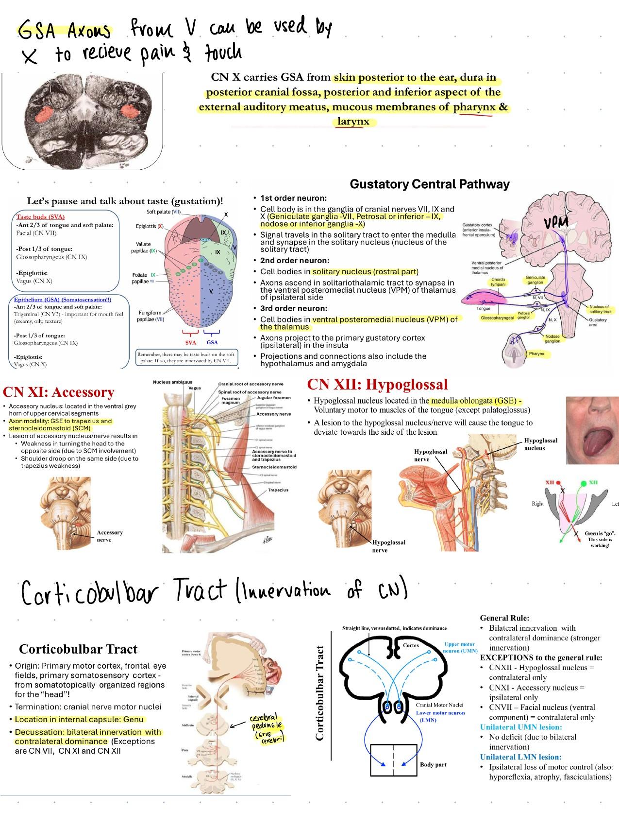
Neuroscience.pdf [summary] · p.28 · tap to enlarge · this page also appears under Cranial nerves V–XII / Descending tracts
GSA of X
- CN X carries GSA from skin posterior to the ear, dura of the posterior cranial fossa, posterior and inferior external auditory meatus, mucous membranes of pharynx and larynx (spinal / main sensory V on the section).
Taste (gustation) — taste buds vs epithelium
- Taste buds (SVA): anterior ⅔ of tongue and soft palate = facial VII; posterior ⅓ = glossopharyngeal IX; epiglottis = vagus X.
- Epithelium (GSA, somatosensation): anterior ⅔ and soft palate = trigeminal V3 (mouth feel — creamy, oily, texture); posterior ⅓ = IX; epiglottis = X. Taste buds on the soft palate are VII. Papillae: fungiform (VII), foliate (IX / VII), vallate (IX).
Gustatory central pathway
- 1st order: cell bodies in the ganglia of VII (geniculate), IX (petrosal / inferior), X (nodose / inferior); signal travels in the solitary tract into the medulla and synapses in the solitary nucleus.
- 2nd order: solitary nucleus (rostral part) → solitariothalamic tract → VPM of the ipsilateral side.
- 3rd order: VPM → primary gustatory cortex (ipsilateral) in the insula / frontal operculum; projections also to hypothalamus and amygdala.
CN XI: accessory
- Accessory nucleus in the ventral grey horn of the upper cervical segments; GSE to trapezius and sternocleidomastoid; lesion → weakness turning the head to the opposite side (SCM), shoulder droop on the same side (trapezius). Figure: cranial and spinal roots, foramen magnum, jugular foramen, C1–C4 spinal nerves.
CN XII: hypoglossal
- Hypoglossal nucleus in the medulla (GSE) — voluntary motor to the muscles of the tongue (except palatoglossus); a lesion of nucleus / nerve makes the tongue deviate towards the side of the lesion ('green is go — this side is working').
Handwritten on this page- 'GSA axons from V can be used by X to receive pain & touch'.
- 'VPM' written on the gustatory figure; 'cerebral peduncle (crus cerebri)' arrowed on the corticobulbar figure.
⭐ Will be testedTaste is ipsilateral via VPM; tongue deviates toward an XII lesion; XI lesion = weak head turn to the opposite side + ipsilateral shoulder droop.
Descending tracts4 pages
p.28rest of the pageCorticobulbar tract — innervation of the cranial nervesDescending tracts
Neuroscience.pdf [summary] · p.28 · tap to enlarge · this page also appears under Cranial nerves V–XII
Corticobulbar tract (innervation of CN)
- Origin: primary motor cortex, frontal eye fields, primary somatosensory cortex — somatotopic 'head' regions; termination: cranial-nerve motor nuclei; location in the internal capsule: genu; decussation: bilateral innervation with contralateral dominance (exceptions CN VII, XI, XII). Levels on the figure: midbrain (III, IV), pons (V, VI, VII), medulla (nucleus ambiguus IX, X, XI; XII).
⭐ Will be testedCorticobulbar fibres arise from motor cortex, FEF and somatosensory cortex, travel in the genu of the internal capsule, and end on the cranial motor nuclei level by level.
p.29Corticobulbar exceptions (VII, XI, XII, X) · descending tracts classification · corticospinal origin · cortical lesionsDescending tracts
Exceptions — facial
- The facial motor nucleus is split: the dorsal part innervates the upper quadrant of the face and follows the rule (bilateral, contralateral dominance); the ventral part innervates the lower quadrant and receives contralateral fibres only.
- UMN lesion (corticobulbar fibres above the nucleus, e.g. stroke): weakness of the contralateral lower half of the face, forehead spared = supranuclear palsy. LMN lesion (nucleus or nerve after it exits): ipsilateral weakness of upper and lower face — cannot wrinkle the forehead or close the eye = Bell's palsy.
Exceptions — accessory
- Ipsilateral corticobulbar innervation only; UMN → ipsilateral accessory nucleus, LMN → ipsilateral SCM and trapezius. Unilateral UMN lesion: unable to rotate the head to the contralateral side against resistance, unable to raise the ipsilateral shoulder; unilateral LMN lesion: the same picture.
Exceptions — hypoglossal
- Contralateral innervation only. Unilateral UMN lesion: tongue deviates away from the lesion (contralateral muscles lose input, tongue 'pushes' to the contralateral side); unilateral LMN lesion: tongue deviates toward the lesion.
Vagus — not an exception but clinically significant
- Because the uvula is small, damage is observable despite bilateral innervation. Unilateral UMN lesion: uvula deviates towards the lesion on phonation (contralateral muscles lose input, uvula 'pulled' to the ipsilateral side); unilateral LMN lesion: uvula deviates away from the lesion.
Descending tracts — motor tracts can be classified two ways
- 1 by location in the cord: lateral or ventromedial. Lateral pathways: lateral corticospinal, rubrospinal — voluntary innervation of appendicular musculature (limbs). Ventromedial pathways: lateral vestibulospinal, medial vestibulospinal, lateral reticulospinal, medial reticulospinal, tectospinal, anterior corticospinal — axial and girdle musculature for postural tone, balance, orientation. Cord diagram of ascending vs descending tracts ('know relations').
Corticospinal (pyramidal) tract: origin
- Origin: cortex (primary motor, premotor, supplementary motor, somatosensory) — UMNs; target: ventral horn LMNs (alpha motor neurons); course: corona radiata, internal capsule (posterior limb), crus cerebri, pons, pyramid of the medulla; decussation: pyramidal decussation in the lowest medulla. Pie chart: 30 % area 4, 30 % area 6, 40 % 3,1,2.
- Cortico-cortical connections: posterior parietal → premotor & SMA; SMA & premotor → primary motor; primary somatosensory ↔ primary motor.
Lesions to motor cortices
- Primary motor cortex: initial paralysis and weakness, often MCA / ACA stroke. Supplementary motor cortex: reduced ability to coordinate the two sides of the body, akinesia (difficulty initiating movement). Premotor cortex: apraxia — difficulty performing complex motor tasks (tying shoelaces) despite intact motor and sensory tracts.
Handwritten on this page- 'LMN lesion will paralyze the whole half face' (with X) beside the facial nucleus diagram.
- 'Know relations' over the cord cross-section.
⭐ Will be testedFacial UMN = forehead spared; XI is the only ipsilateral-only nerve; XII contralateral-only; premotor lesion = apraxia.
p.30Corticospinal tract · brainstem descending systems · vestibulo-, reticulo-, tecto-, rubrospinal tractsDescending tracts
Corticospinal tract — sends signals for motor control
- UMN from cortex → medulla (decussates at the caudal medulla) → lateral corticospinal → LMN; a second UMN stays uncrossed as the anterior corticospinal (balance), crossing near its termination in the ventral white commissure. Two annotated cord sections.
Descending motor systems from the brainstem
- 'Blue' paths = MEDIAL MOTOR SYSTEMS (lateral and medial vestibulospinal, lateral and medial reticulospinal, tectospinal): proximal axial and girdle muscles for postural tone, balance, head-neck orientation, automatic gait; extend ipsilaterally or bilaterally — unilateral lesions produce no obvious deficit; voluntary but 'outside' the pyramidal system = extrapyramidal. 'Red' = LATERAL MOTOR SYSTEMS (rubrospinal) assisting the extremities. The 'lateral / medial' in a tract's name describes its anatomical position, not its system.
- Detail of the pyramidal decussation: rostral vs caudal — upper-extremity fibres cross rostral (red), lower-extremity fibres caudal (blue).
Vestibulospinal tracts
- Lateral vestibulospinal ('LV'): origin lateral vestibular nucleus of the medulla; no decussation (ipsilateral); termination all levels (predominantly lumbar) lamina VII–IX; may inhibit some flexors but mainly excites extensor motor neurons to maintain posture (e.g. leg extensors).
- Medial vestibulospinal: origin medial, inferior, lateral vestibular nuclei; bilateral (crosses in the medulla); termination cervical cord lamina VII–IX; maintains posture of head and neck. Both modulated by the vestibular apparatus and cerebellum.
Reticulospinal tracts
- Lateral reticulospinal (STOP): origin reticular formation of the medulla; bilateral, partial cross in the medulla; all levels lamina VII–IX; inhibits voluntary motor and reflex responses of axial and limb muscles; decreases tone by inhibiting spindle activity.
- Medial reticulospinal (GO, 'MR'): origin reticular formation of the pons; no decussation (ipsilateral); all levels (predominantly cervical) lamina VII–IX; facilitates voluntary movements; increases tone (acts on gamma motor neurons).
Tectospinal tracts
- Origin superior colliculus; decussation midbrain, projects contralaterally; termination cervical cord lamina VI–VIII; coordinates head, neck and eye movements, primarily in response to visual stimuli.
Rubrospinal tracts
- Origin red nucleus; decussation midbrain, contralateral; termination cervical cord lamina VI–VIII; facilitates motor neurons of proximal flexor musculature; functionally parallel to the lateral corticospinal tract; small in humans, may take over after corticospinal injury.
Handwritten on this page- 'Sends signals for motor control'; 'medulla / cortex'; 'UMN / LMN'; 'lateral' vs 'anterior'; 'decussates @ caudal medulla'; 'balance' beside the anterior CST.
⭐ Will be testedLateral VST = extensor tone (ipsilateral, lumbar); medial RST GO / lateral RST STOP; rubrospinal = upper-limb flexors.
p.31top of the pageDecorticate vs decerebrate rigidityDescending tracts
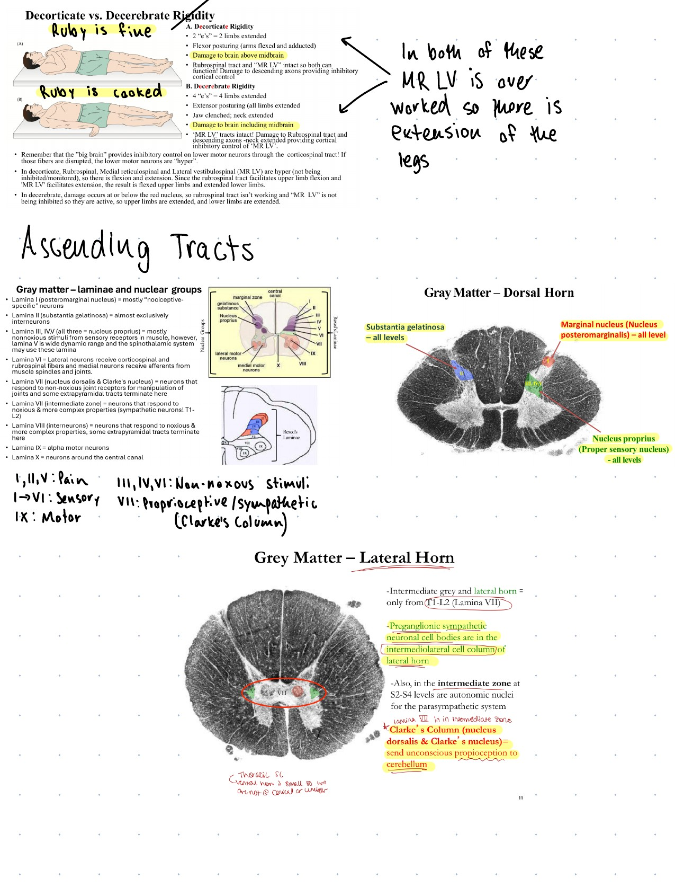
Neuroscience.pdf [summary] · p.31 · tap to enlarge · this page also appears under Ascending tracts & pain
Decorticate vs decerebrate rigidity
- A Decorticate ('Ruby is fine'): 2 'e's = 2 limbs extended; flexor posturing (arms flexed and adducted); damage to the brain above the midbrain; rubrospinal tract and 'MR LV' intact so both can function; damage to descending axons providing inhibitory cortical control.
- B Decerebrate ('Ruby is cooked'): 4 'e's = 4 limbs extended; extensor posturing, jaw clenched, neck extended; damage including the midbrain; 'MR LV' intact but rubrospinal and descending axons providing cortical inhibitory control of 'MR LV' damaged.
- The 'big brain' inhibits LMNs through the corticospinal tract; if disrupted the LMNs are 'hyper'. Decorticate: rubrospinal + medial reticulospinal + lateral vestibulospinal (MR LV) all hyper → flexed upper limbs (rubrospinal) and extended lower limbs (MR LV). Decerebrate: damage at or below the red nucleus → rubrospinal off, MR LV uninhibited → all limbs extended.
Handwritten on this page- 'In both of these MR LV is over worked so there is extension of the legs.'
⭐ Will be testedRed nucleus is the pivot: lesion above it → decorticate (arms flexed by the intact rubrospinal tract), lesion at / below it → decerebrate (only MR LV left, everything extends).
Ascending tracts & pain4 pages
p.31rest of the pageGrey-matter laminae · dorsal horn · lateral hornAscending tracts & pain
Neuroscience.pdf [summary] · p.31 · tap to enlarge · this page also appears under Descending tracts / Ascending tracts & pain
Gray matter — laminae and nuclear groups
- Lamina I (posteromarginal nucleus) = mostly nociceptive-specific neurons; II (substantia gelatinosa) = almost exclusively interneurons; III, IV, V (nucleus proprius) = mostly non-noxious muscle-receptor input, but V is wide-dynamic-range and used by the spinothalamic system; VI = lateral neurons receive corticospinal and rubrospinal fibres, medial neurons receive spindle / joint afferents; VII (nucleus dorsalis / Clarke's) = non-noxious joint receptors, some extrapyramidal terminations; VII intermediate zone = noxious and complex properties (sympathetic neurons T1–L2); VIII = interneurons, extrapyramidal terminations; IX = alpha motor neurons; X = neurons around the central canal.
Gray matter — dorsal horn
- Substantia gelatinosa (all levels), marginal nucleus (posteromarginalis, all levels), nucleus proprius (proper sensory nucleus, all levels) marked on the section.
Grey matter — lateral horn
- Intermediate grey and lateral horn only from T1–L2 (lamina VII); preganglionic sympathetic cell bodies in the intermediolateral cell column; in the intermediate zone at S2–S4 are autonomic nuclei for the parasympathetic system; Clarke's column (nucleus dorsalis) = sends unconscious proprioception to the cerebellum.
Handwritten on this page- 'I, II, V: pain · I→VI: sensory · IX: motor · III, IV, VI: non-noxious stimuli · VII: proprioceptive / sympathetic (Clarke's column)'.
- 'Lamina VII in intermediate zone'; 'Thoracic SC ventral horn is small so we are not @ cervical or lumbar'.
⭐ Will be testedIML only T1–L2; laminae I / II / V carry pain; lamina VII holds Clarke's column (unconscious proprioception to the cerebellum) and the sympathetic cells.
p.32Dorsal column–medial lemniscus · spinothalamic · tactile receptorsAscending tracts & pain
Dorsal column (DCML) — vibration, proprioception, fine touch
- 1st order DRG → fasciculus gracilis (T7 & below, legs) / fasciculus cuneatus (T6 & above, arms) → 2nd order nucleus gracilis / cuneatus in the medulla → cross as the medial lemniscus → 3rd order thalamus (VPL) → cortex.
Spinothalamic tract — pain, temperature, crude touch
- 1st-order afferent (nociceptors / thermoceptors) enters via Lissauer's tract → 2nd-order synaptic relay in lamina I (marginal), II (substantia gelatinosa), V (nucleus proprius) → crosses → ascends to the thalamus (VPL) → 3rd order → primary somatosensory cortex; Rexed laminae figure and the three-neuron figure.
Tactile sensations — superficial receptors
- Meissner's corpuscles (Aβ): beneath the epidermis in the dermal papillae at the edge of the papillary ridge; light touch; concentrated in fingers and lips; encapsulated unmyelinated endings; rapidly adapting.
- Merkel's receptors (Aβ): pressure, position, texture, 2-point discrimination; small epithelial cell around the nerve terminal at the centre of the papillary ridge; slowly adapting.
- Tactile sensitivity is greatest on hairless (glabrous) skin — fingers, lips, palms, soles; fingerprints contain a dense matrix of mechanoreceptors that sense changes in skin contour.
Tactile sensations — deep receptors
- Pacinian corpuscles (Aβ): vibration and pressure; vibration may detect surface texture (rough vs smooth); rapidly adapting.
- Ruffini's corpuscles (Aβ): stretching of skin and sustained pressure (also warmth); monitor slippage of objects along the skin, modulating grip; slowly adapting.
Handwritten on this page- 'Sends signals for'; '1st order / 2nd order / 3rd order'; 'NC NG'; 'medial lemniscus'; 'thalamus (VPL)'; 'cortex'; 'T7 & below legs / arms T6 & above'; 'Lissauer's'; 'VPL'.
⭐ Will be testedGracilis medial (legs), cuneatus lateral (arms); DCML crosses in the medulla, spinothalamic at the segment.
p.33Primary afferents · adapting receptors · pain neurobiology · axon reflex · referred pain · trigeminal neuralgiaAscending tracts & pain

Neuroscience.pdf [summary] · p.33 · tap to enlarge
Primary afferent — 4 types of specialised axons
- A-alpha: large myelinated, proprioception from skeletal muscle (Ia, Ib — spindles, GTOs); 13–20 µm, 80–120 m/s.
- A-beta: medium myelinated, mechanoreception (touch, vibration, pressure); 6–12 µm, 35–75 m/s.
- A-delta: small myelinated, pain and temperature; 1–5 µm, 5–30 m/s — fast, thinly myelinated, sharp intense 'first pain' ('Ow!').
- C: small unmyelinated, pain, temperature, itch; 0.2–1.5 µm, 0.5–2 m/s — slower, throbbing, burning 'second pain' ('Aahh').
Rapidly vs slowly adapting receptors
- Slowly adapting: respond throughout a stimulus; as pressure increases the total number of action potentials rises and firing rates are higher. Rapidly adapting: respond only at the start and end, signalling when applied and removed.
- Receptive fields: Pacinian (vibration) large, vague borders, fast; Meissner (touch) small, sharp, fast; Merkel (touch) small, sharp, slow; Ruffini (stretch) large, vague, slow.
Neurobiology of pain perception
- 'Inflammatory soup' released after tissue injury sensitises nociceptors: bradykinin, 5-HT, prostaglandins, ATP, H⁺, histamine (mast cell / neutrophil), NGF, substance P, CGRP (calcitonin gene-related peptide); DRG cell body → dorsal horn → brain.
The axon reflex (flare response)
- Signals initiated in sensory nerves travel antidromically along other branches to reach an effector (blood vessel, mast cell); signalling starts mid-axon and goes directly to the effector — no integration centre or synapse, not a true reflex; promotes spread of vasodilation and inflammation. Triple response: 1 red spot (capillary dilation), 2 flare (redness around), 3 wheal (fluid exudation). Substance P → mast cells → histamine → nociceptor endings.
Dorsal-horn key points
- Lamina II — almost exclusively interneurons, C fibres synapse here; lamina V — receives A-beta, A-delta, C fibres and visceral input. Aδ / C / Aβ terminations drawn on Rexed's laminae. Cord map: lateral spinothalamic (pain, temperature) vs anterior spinothalamic (pressure, touch) with S-L-T-C somatotopy; posterior funiculus (gracilis / cuneatus), lateral corticospinal, spinocerebellar tracts.
Referred pain
- Heart attack → pain in the arm: the same dorsal-horn neuron in lamina V receives afferents from visceral nociceptors and cutaneous nociceptors.
Trigeminal neuralgia
- Brief attacks of excruciating pain triggered by moving the mandible, smiling, yawning, tactile stimulation; may be caused by demyelination from pressure of small aberrant arteries; treatment carbamazepine, surgical removal of the arterial compression; V1 / V2 / V3 territory figure.
Handwritten on this page- 'sensitizes pain terminals'.
- 'if it starts w/ M its small; if it is a corpuscle it's fast'.
⭐ Will be testedC fibres → lamina II; visceral + cutaneous converge on lamina V (referred pain); flare survives cord lesions.
p.34top of the pagePAG–raphe pain modulationAscending tracts & pain

Neuroscience.pdf [summary] · p.34 · tap to enlarge · this page also appears under Spine disorders
Periaqueductal gray – raphe nuclei tract
- PAG (midbrain) → nucleus raphe magnus (medulla, serotonergic) → dorsolateral funiculus → lamina II of the dorsal horn; inhibitory interneuron onto the second-order spinothalamic neuron.
Handwritten on this page- 'NRM neurons project serotonin to lamina II which bind Aδ & C fibers to inhibit release substance P, which activates 2nd order neurons tell VPL to reduce more pain.'
- 'Rubbing skin where there is pain, activates Aβ fibers which switches off Aδ fibers.'
⭐ Will be testedPAG → nucleus raphe magnus (serotonin) → lamina II interneurons suppress substance-P release; rubbing the skin (Aβ) gates Aδ / C pain.
Spine disorders2 pages
p.34rest of the pageUMN vs LMN · transection · Brown-Séquard · syringomyelia · SCDSpine disorders
Neuroscience.pdf [summary] · p.34 · tap to enlarge · this page also appears under Ascending tracts & pain / Spine disorders
Upper & lower motor neurons
- UMN: control LMNs; cell bodies in cerebral cortex and brainstem; axons descend and synapse on LMNs or interneurons on the side opposite their origin; most reach the cord in the corticospinal tract; others arise from red nucleus, reticular formation, vestibular nuclei. LMN: cell bodies in the ventral horn and cranial motor nuclei; axons exit via the ventral root and form spinal nerves to the neuromuscular junction.
Motor neuron lesions (table)
- Strength: weakness / weakness. Tone: increased (spasticity) / decreased (flaccidity). Reflexes: hyper-reflexia / hypo- or areflexia. Babinski: present / absent. Atrophy: absent / present. Fasciculations: absent / present. Clonus: present / absent. Location: corticospinal tract, internal capsule, motor cortex / anterior horn, spinal nerve root, peripheral nerve.
Complete cord transection
- Compression or transverse lesion of the entire cord; below the lesion: loss of discriminative touch, vibration and position sense; loss of pain and temperature; loss of voluntary motor movements (shaded body maps).
Brown-Séquard syndrome
- Lesion of one half of the cord; below the level — ipsilateral: motor weakness / spastic paralysis (lateral corticospinal), loss of fine touch, vibration, proprioception (dorsal column); contralateral: loss of pain and temperature (spinothalamic).
Syringomyelia
- Enlargement of the central canal forming a cavity that destroys surrounding tissue; most commonly cervical → 'cape-like' loss of pain and temperature typically involving the C5 dermatome; can extend rostrally into the medulla or caudally to the lumbar cord. Loss of pain / temperature over neck, shoulders, arms (crossing fibres in the anterior white commissure); weakness and atrophy of hands and arms if the anterior horn is involved; touch and vibration usually spared (dorsal columns typically not involved). MRI: cavitation.
Subacute combined degeneration
- Cord lesions from B12 deficiency — pernicious anaemia, malabsorption, malnutrition; B12 is essential for myelin synthesis and maintenance (exact mechanism unclear). Bilateral spastic paralysis (lateral corticospinal degeneration) and bilateral loss of discriminative touch, vibration, position (dorsal column degeneration); reduced vibration and position sense, positive Romberg; 'white' signal in the dorsal columns on MRI.
⭐ Will be testedBabinski / clonus = UMN, fasciculations / atrophy = LMN; syrinx = C5 cape, dorsal columns spared; SCD = dorsal columns + lateral CST.
p.35top of the pageALS · Babinski · HoffmanSpine disorders

Neuroscience.pdf [summary] · p.35 · tap to enlarge · this page also appears under Spinal reflexes
Amyotrophic lateral sclerosis (Lou Gehrig disease)
- Motor neuron disease where both UMNs and LMNs degenerate in cortex, brainstem and cord; familial (10 %) and sporadic; cause uncertain — superoxide dismutase (familial) or ubiquilin 2 mutations impair repair / disposal of damaged proteins → accumulation → progressive paralysis. Initial complaint typically weakness in one limb (limb onset), spreading to the opposite limb.
- Clinical: weakness and atrophy of limb muscles, cramping and fasciculations, general hyper-reflexia; flaccid paralysis at the level of the lesion, spastic paralysis below; dysphagia, dysarthria, breathing problems; touch, smell, taste, vision and hearing NOT affected. Stained cord: lateral corticospinal tract and lower motor neurons pale.
Babinski sign (extensor plantar response)
- Abnormal fanning of the toes = corticospinal / UMN damage; normally inhibited by the cortex; positive = big toe bends up and back, other toes fan out; sole stroked with a sharp object from front to back.
Hoffman's reflex
- Upper-extremity test: tap or flick the nail of the middle or ring finger; flexion of index finger / thumb = positive — may indicate hypertonia / hyper-reflexia from a UMN issue, though some healthy hyper-reflexic people show it.
⭐ Will be testedALS = UMN + LMN degeneration (SOD1 / ubiquilin-2) with sensation, sight, hearing, smell and taste spared; Babinski (fanning toes) and Hoffman (index / thumb flexion) are the UMN signs.
Spinal reflexes4 pages
p.35rest of the pageReflex arc · muscle spindleSpinal reflexes
Neuroscience.pdf [summary] · p.35 · tap to enlarge · this page also appears under Spine disorders / Spinal reflexes
Spinal reflexes
- Reflex arc: stretch receptor → sensory neuron (DRG) → interneuron / motor neuron cell bodies in the grey matter → motor neurons → muscle (patellar tendon, reflex hammer).
Muscle spindle
- Two types of intrafusal fibres — bag and chain; primary type Ia sensory ending on bag & chain, secondary type II on chain only; γ motor neuron to the intrafusal fibres, α motor neuron to extrafusal; senses muscle length, stimulated by stretching the mid-portion, stretch → increased firing.
Handwritten on this page- 'Reflex is an action that happens independent of the brain.'
- 'Contains 2 types of intrafusal muscle fibers. Sensory receptors on the fibers sense any stretch of the muscle. Sensory receptor type Ia innervates bag & chain fibers while type II innervates chain only.'
- 'Extrafusal fiber: α motor neuron; intrafusal: γ motor'.
⭐ Will be testedIa endings sit on bag + chain fibres, II on chain only; γ motor neurons keep the intrafusal fibres taut so the spindle keeps sensing stretch.
p.36Stretch reflex circuit · reciprocal inhibition · gamma motor neuron · myotatic reflexSpinal reflexes

Neuroscience.pdf [summary] · p.36 · tap to enlarge
Stretch-reflex circuit
- Sensory neuron (Ia fibre) from the muscle spindle → cord → α motor neuron → extrafusal fibre of the same muscle.
Reciprocal innervation
- Minimises the antagonistic force and increases the effectiveness of the stretch reflex: the Ia signal also synapses with an inhibitory interneuron onto the antagonist's motor neuron.
Function of the γ motor neuron — alpha-gamma coactivation
- An UMN activates α and γ neurons together; γ maintains tension in the intrafusal fibres (preserves sensitivity) so the spindle keeps sensing stretch while the muscle shortens.
Myotatic reflex / deep tendon reflex
- Contraction in response to a sudden stretch from a tap on the tendon. Receptor: muscle spindle; stimulus: rapid stretch; afferent: Ia fibres of the DRG synapsing directly on the α motor neuron of the same muscle; efferent: α motor neurons of the anterior horn; net effect: contraction. Photos: biceps, triceps, brachioradialis, patellar / knee-jerk, Achilles reflexes; quadriceps circuit figure.
Handwritten on this page- 'When type Ia neuron senses muscular stretch it sends a signal to the spinal cord where it synapses with an α motor neuron that will counteract the stretch through activation of an extrafusal fiber in the same muscle. At the same time the type Ia signal synapses with an inhibitory interneuron that inhibits the contraction of the antagonistic muscle.'
- 'When an UMN fires to contract a muscle it activates the α & γ neurons at the same time. α contracts the muscle & γ maintains tension of the intrafusal fibers so the muscle is able to continue sensing stretch because the sensory nerves are on the intrafusal fibers.'
⭐ Will be testedMyotatic = the only monosynaptic reflex; α–γ coactivation keeps the spindle in range.
p.37Golgi tendon reflex · withdrawal · crossed-extensor · tested reflexes & grading · spinal vs neurogenic shockSpinal reflexes

Neuroscience.pdf [summary] · p.37 · tap to enlarge
Golgi tendon reflex / inverse myotatic / autogenic inhibition
- If a muscle carries more load than it can handle the reflex prevents serious damage: relaxation and lengthening in response to contraction. Polysynaptic; receptor Golgi tendon organ (net-like knobby endings); stimulus excessive stretch (high tension); afferent Ib → inhibitory interneuron → inhibits the α motor neuron of the same muscle; net effect relaxation; protects from tearing.
Withdrawal (flexor) reflex
- Nociceptive reflex protecting from damaging stimuli (pain, heat, sharp objects); polysynaptic; receptors nociceptors in skin / deep tissue; afferents Aδ / C; excitatory interneurons → ventral-horn α motor neurons of flexors (withdrawal); inhibitory interneurons → extensors of the same limb (reciprocal inhibition); hand withdrawn from a hot object without thinking; an unconscious (drunk / drugged) person does not exhibit it.
Crossed-extensor reflex
- Complements the flexor reflex by maintaining balance when a limb is withdrawn (stepping on a sharp object); Aδ / C afferents synapse on interneurons of both sides: same side excite flexors (hamstrings), inhibit extensors (quadriceps); opposite side excite extensors (support body weight), inhibit flexors. Net: ipsilateral limb flexes, contralateral limb extends.
Commonly tested reflexes & grading
- Biceps — biceps brachii — C5 — musculocutaneous; brachioradialis — C6 — radial; triceps — C7 — radial; knee-jerk — quadriceps femoris — L3/L4 — femoral; Achilles — gastrocnemius / soleus — S1 — tibial. Grades: 0 absent; 1+ hypoactive; 2+ normal; 3+ hyperactive without clonus; 4+ hyperactive with clonus. Clonus = involuntary contractions from sudden stretching, associated with UMN lesions.
Spinal shock
- Temporary condition immediately after complete / severe cord injury: loss of all neurological activity below the level — motor, sensory, reflexes; autonomic loss (hypotension, bradycardia, bladder / bowel) with upper thoracic / cervical injury; catheter for the bladder. Phases: 1 (0–1 day) areflexia / hyporeflexia — loss of descending facilitation; 2 (1–3 days) reflex return — denervation supersensitivity; 3 (1–4 weeks) initial hyper-reflexia — axon-supported synaptic growth; 4 (1–12 months) late hyper-reflexia — soma-supported synaptic growth.
Neurogenic shock
- Autonomic imbalance after cord injury of the cervical / upper thoracic spine; descending sympathetic tracts disrupted (fracture / dislocation); loss of sympathetic tone with unopposed parasympathetic response → hypotension, bradycardia, poikilothermia.
Handwritten on this page- 'pain', 'Aδ neuron', 'δ' beside the withdrawal figure.
⭐ Will be testedIb = GTO = relaxation; withdrawal + crossed extensor use Aδ / C; reflex root levels C5-C6-C7-L4-S1.
p.38top of the pageNeurogenic vs spinal shockSpinal reflexes

Neuroscience.pdf [summary] · p.38 · tap to enlarge · this page also appears under Reticular formation
Neurogenic shock vs spinal shock
- Spinal shock: acute cord injury; absence of all voluntary and reflex activity below the injury (decreased reflexes, loss of sensation, flaccid paralysis); lasts days to months (transient); both can occur in the same patient but are not the same disorder.
- Neurogenic shock: haemodynamic phenomenon — loss of vasomotor tone and sympathetic tone → impaired cellular metabolism; hypotension (massive vasodilation), bradycardia (unopposed parasympathetic), poikilothermia; occurs within 30 min of injury at T5 or above, lasts up to 6 weeks; also from drugs affecting the medullary vasomotor centre (opioids, benzodiazepines). Management: airway, fluids, atropine for bradycardia, vasopressors.
⭐ Will be testedSpinal shock = transient loss of everything below the injury (days–months); neurogenic shock = haemodynamic — hypotension + bradycardia + poikilothermia within 30 min of a T5-or-above injury, up to 6 weeks.
Reticular formation4 pages
p.38rest of the pageReticular formation · pain-affect pathways · ARASReticular formation
Neuroscience.pdf [summary] · p.38 · tap to enlarge · this page also appears under Spinal reflexes / Reticular formation
Reticular formation: what is it?
- Brainstem, at the interface between cord and higher structures; loose network of nuclei throughout the brainstem; active in both directions (ascending / descending); vertebrate-common functions: cardiovascular, respiratory, reflexes, wakefulness / consciousness.
Functions: affective / emotional qualities of pain & modulation
- Spinoreticular (paleospinothalamic) tract: chronic dull C-fibre pain → intralaminar thalamus → cingulate, somatosensory cortex, hypothalamus; collaterals to the reticular formation for emotion, arousal, motivation.
- Spinomesencephalic → raphespinal tract: PAG → nucleus raphe magnus → dorsolateral funiculus → dorsal horn — the pathway mediating pain suppression.
Functions: ascending reticular activating system (ARAS)
- Sensory inputs into the reticular formation modulate cortical neurons, excitability and states of consciousness — arousal and alertness. Sensory pathways (ascending tracts, cranial nerves, cerebellum, cortical feedback) → reticular formation (diffuse central brainstem cells) → thalamus (intralaminar, midline, reticular nuclei) → cerebral cortex ('consciousness' poorly localised).
Handwritten on this page- 'ARAS located in mid brain.'
⭐ Will be testedARAS relays through the intralaminar thalamus; spinoreticular = the affective (C-fibre) dimension of pain; spinomesencephalic → PAG → raphe = suppression.
p.39Reticulospinal tracts · cardiovascular & respiratory centres · tonsillar herniationReticular formation
Reticulospinal tracts
- Feedback loop between reticular-formation nuclei and the cerebellum; premotor and motor cortex input integrated in the loop; targets = nucleus reticularis pontis oralis (pons) and nucleus reticularis gigantocellularis (medulla) → reticulospinal fibres. Medial RST: excitation of anti-gravity extensors; pontine (medial) tract facilitates (+) spinal reflexes. Lateral RST: inhibition of axial extensors and of the MRT; medullary (lateral) tract inhibits (−) spinal reflexes. Together: modulation of muscle tone, regulation of posture (α and γ motor neurons).
Autonomic — cardiovascular
- Reticulospinal tracts also carry sympathetic and parasympathetic outflow. Afferents to the medullary cardiovascular centres: chemoreceptors and baroreceptors — GVA from CN IX and X via the solitary pathway; hypothalamus and higher cortex. Efferents: dorsal motor nucleus of vagus (parasympathetic — cardioinhibitory), reticulospinal tracts → sympathetic chain → cardiac nerve (cardioacceleratory); two descending systems (inhibitory / excitatory) modulate BP, HR, stroke volume.
Autonomic — respiratory
- Pons: pneumotaxic (inhibition) and apneustic centres (pontine respiratory group); medulla: dorsal (DRG) and ventral (VRG) respiratory groups, Bötzinger / pre-Bötzinger complexes. Afferents: aortic body (X) and carotid body (IX) — blood pressure and composition, pO₂, pCO₂, pH. Efferents: reticulospinal → phrenic (C3–C5, diaphragm) and intercostal nerves; brainstem motor nuclei for larynx, soft palate, facial and accessory respiratory muscles.
Tonsillar herniation
- ↑ intracranial pressure → cerebellum pushed down through the foramen magnum → respiratory (cardiac) insufficiency = DEATH. Figure of subfalcine, uncal, central and tonsillar herniations, falx cerebri, tentorium cerebelli.
Handwritten on this page- 'Controls' with arrows from the reticulospinal slide to the cardiovascular and respiratory slides.
⭐ Will be testedPontine RF = facilitate, medullary RF = inhibit; cardio-respiratory centres are reticular; tonsillar herniation compresses the medulla.
p.40Vomiting · PPRF · micturition · diffuse modulatory systems · ACh · histamine · dopamineReticular formation

Neuroscience.pdf [summary] · p.40 · tap to enlarge
Functions: reflexes — vomiting
- Area postrema / chemoreceptor trigger zone (CTZ): circumventricular, no blood–brain barrier, detects noxious stimuli (emetic toxins); afferents: drugs, toxins, hormones (pregnancy), alcohol, infection, vestibular stimuli; efferent: dorsal motor nucleus of X → vomiting reflex; vomiting centre / central pattern generator with the nucleus tractus solitarius in the dorsal vagal complex.
Functions: conjugate horizontal eye movements
- Paramedian pontine reticular formation (PPRF): coordinates eye movements and horizontal conjugate gaze — both eyes moving in the same horizontal direction during posture / head changes; figure: frontal cortex → PPRF → abducens nucleus → MLF → oculomotor nucleus; eyes deviate toward the side of a cortical injury.
Functions: micturition
- Coordination between somatic motor and autonomic systems with cortical, supraspinal and spinal inputs. Involuntary reflex: stretch receptors detect filling → S2–S3 → parasympathetic pelvic nerve excites the detrusor and relaxes the internal urethral sphincter. Voluntary control: the pontine micturition centre receives stretch signals; if timely, pons → spinal interneurons excite detrusor / relax internal sphincter; if untimely, signals keep the external sphincter (pudendal, somatic) contracted. Prefrontal cortex and cingulate gyrus 'tell' the PMC not to void if socially untimely.
Diffuse modulatory systems
- Each system has a small core of neurons (a few thousand); each neuron influences > 100 000 postsynaptic neurons; synapses run along axons as boutons en passant; modulate rather than switch (volume, not power); transmitter not quickly reabsorbed, released in the space between neurons.
Cholinergic (ACh) systems
- Pontomesencephalic: laterodorsal tegmental and pedunculopontine nuclei; basal forebrain: medial septal nucleus, nucleus of the diagonal band, nucleus basalis — damaged in Alzheimer's; ACh generally excitatory — attention, memory, learning; central block causes delirium and memory deficit.
Monoamines: histamine
- Origin tuberomammillary nucleus of the hypothalamus, projects widely; sleep–wake cycle, arousal; antihistamines cause drowsiness by blocking CNS histamine receptors.
Monoamines: dopamine
- Mesostriatal (nigrostriatal) — damaged in Parkinson's; mesolimbic — 'positive' symptoms of schizophrenia and drug addiction; mesocortical — cognitive deficits and hypokinesia in Parkinson's, 'negative' symptoms of schizophrenia; neuroendocrine — tonic inhibitory regulation of anterior-pituitary prolactin, pituitary tumours (prolactinoma). Sources: substantia nigra pars compacta, ventral tegmental area.
Handwritten on this page- 'Reticular formation takes input from PMC & cortex and sends a signal for either voiding or storage'; 'PMC = pontine micturition center'.
- 'substantia nigra' beside the dopamine figure.
⭐ Will be testedArea postrema is outside the BBB; PPRF → VI nucleus → MLF → III; nucleus basalis ACh = Alzheimer; four dopamine systems.
p.41top of the pageNoradrenaline · serotonin systemsReticular formation

Neuroscience.pdf [summary] · p.41 · tap to enlarge · this page also appears under Optic pathways
Monoamines: noradrenaline / norepinephrine
- Originates in the locus coeruleus and lateral tegmental area, projects to the entire forebrain; attention, sleep–wake cycles, mood, sympathetic activities; ADHD treated with drugs that enhance noradrenergic pathways; NE and serotonin important in depression, manic-depressive disorder and anxiety / OCD.
Monoamines: serotonin
- Raphe nuclei: rostral raphe → entire forebrain; caudal raphe → cerebellum, medulla, spinal cord; disruptions in depression, anxiety, OCD, aggression, some eating disorders; caudal raphe modulates pain with the PAG. Figure: nucleus linearis, dorsal / medial raphe (midbrain), raphe pontis / magnus (pons), raphe pallidus / obscurus (medulla).
⭐ Will be testedLocus coeruleus + lateral tegmental area = noradrenaline (attention, sleep–wake, mood, ADHD); raphe = serotonin — rostral to forebrain (mood, OCD, eating), caudal to cerebellum / cord (pain with the PAG).
Optic pathways7 pages
p.41rest of the pageOptic radiations · LGN layers · striate cortexOptic pathways
Neuroscience.pdf [summary] · p.41 · tap to enlarge · this page also appears under Reticular formation / Optic pathways
Optic radiations
- From the LGN axons enter the white matter forming the optic radiations — the visual fields are carried as quadrants. Two streams: 1 parietal stream terminates in the cuneus — superior retinal quadrant = inferior visual field; 2 Meyer's loop (temporal stream) terminates in the lingual gyrus — inferior retinal quadrant = superior visual field.
Pathways within the optic radiations
- 'M-pathway' from the magnocellular layers (movement and spatial analysis) → layer 4Cα of primary visual cortex; 'P-pathway' from the parvocellular layers (colour and form) → layer 4Cβ.
LGN — six layers
- Parvocellular layers 3–6 (input retinal ganglion midget cells, output 4Cβ); magnocellular 1–2 (parasol cells → 4Cα); contralateral eye → layers 1, 4, 6; ipsilateral → 2, 3, 5.
Optic radiations — colour-coded
- Right calcarine sulcus and primary visual cortex: cuneus (blue) receives the LEFT inferior visual quadrant of each eye; lingual gyrus (red) receives the LEFT superior quadrant; the fovea (highest acuity) receives more neurons in cortex. Layer 4 of the primary visual cortex holds the LGN terminations; layer 4B contains many myelinated axons → pale stria of Gennari → area 17 along the calcarine banks = striate cortex.
- 3-D figure: left Meyer's loop carries the right superior visual field from each eye; L-LUQ / L-RUQ / R-LUQ / R-RUQ quadrant key; fields end up 'upside down and backwards' on the retina.
Handwritten on this page- '(R) LGN + (L) LGN each carries ½ of the whole visual field, then splits the ½ into quadrants → optic radiations'.
- 'Parietal loop' beside the cuneus and 'Meyers loop' beside the lingual gyrus; 'colour coded'; 'skip this?' beside the M / P pathway slide; 'If this is right eye — left / right / left / right / right / left' down the LGN layers; 'colour' vs 'movement'; '(Thalamus) (striate cortex)'; 'From upper part of visual field will go to lingual'.
⭐ Will be testedCuneus = lower field, lingual = upper field; LGN 1-4-6 contralateral; stria of Gennari = area 17.
p.42Visual fields on the retina · optic nerve · bitemporal & binasal hemianopia · homonymous hemianopiaOptic pathways
Visual-field mapping
- Binocular field with left and right visual fields (A–D), fixation point; left temporal field falls on the right nasal retina / left nasal field on the left temporal retina — temporal retina sees the nasal field; nasal retinal fibres cross at the chiasm into the contralateral optic tract.
Optic nerve
- Axons ultimately project to the LGN of the thalamus (the 'other' axons follow the other 3 pathways); a complete lesion of the optic nerve = complete monocular visual loss (blind eye).
Optic chiasm: bitemporal hemianopia
- Lesion of the chiasm — pituitary adenomas, meningiomas, craniopharyngiomas; crossing nasal-retina axons damaged → bilateral loss of the temporal fields ('hemianopia = half no sight').
Optic chiasm: lateral aspect
- Internal carotid artery problem (bilateral calcification) compresses the lateral chiasm — the uncrossed temporal-retina axons carrying nasal-field information → unilateral or bilateral nasal hemianopia.
Contralateral homonymous hemianopia
- Lesions of the optic tract, LGN or one side of the primary visual cortex (cuneus + lingual; lesion or tumour): the same side of the visual field is lost in each eye, contralateral to the lesion — e.g. right optic tract lesion (carrying left nasal retina + right temporal retina) → loss of the left visual field in both eyes.
Handwritten on this page- 'L temporal visual field', 'nasal visual field', 'R temporal visual field'; 'right visual field' / 'left visual field' beside each temporal retina.
- 'Blind' beside monocular loss; 'Nasal hemianopsia – bilateral or unilateral'; 'R optic tract lesion → L visual field in both eyes'; 'optic tract on R side carrying L nasal retina & R temporal retina which process L visual field in both eyes'; 'cuneus & lingual'.
⭐ Will be testedCentral chiasm = bitemporal (pituitary); lateral chiasm = nasal (carotid); behind the chiasm = contralateral homonymous.
p.43Quadrantanopias · macular sparing · pupillary light reflex · accommodation · blink reflexOptic pathways
Contralateral inferior quadrantanopia
- Lesion of the parietal optic radiations terminating in the cuneus (tumours, infarcts, demyelination): left parietal loop → right inferior quadrantanopia ('pie on the floor').
Contralateral superior quadrantanopia
- Lesion of the temporal radiations (Meyer's loop) terminating in the lingual gyrus: left temporal loop → right superior quadrantanopia ('pie in the sky').
Contralateral homonymous hemianopia with macular sparing
- Vascular disturbance to one occipital lobe — posterior cerebral artery occlusion; foveal information goes to the occipital pole, which by anastomoses can be supplied by the middle cerebral artery or other vessels → hemianopia or superior / inferior quadrantanopia with macular sparing. Territory map: ACA, MCA superior / deep / inferior, anterior choroidal, PCA deep branches.
Pupillary light reflex — how does it work?
- Light activates retinal ganglion cells → optic nerve → optic tract, bilaterally, to the pretectal nuclei → bilaterally to the Edinger-Westphal nuclei (preganglionic parasympathetic) → oculomotor nerves → ciliary ganglion → post-ganglionic short ciliary nerves → pupillary constrictor muscles → constrict; figure with red nucleus, superior colliculus, pretectal nucleus.
Accommodation reflex
- Active when focusing from a distant to a near object; three events: 1 convergence — medial recti contract; 2 pupil constriction — parasympathetic pathway from pretectal nuclei to ciliary ganglion to sphincter pupillae; 3 rounder (convex) lens — ciliary-ganglion fibres to the ciliary body, ciliary-muscle contraction reduces tension on the suspensory ligament.
Blink reflex
- Trigeminal detects the sensory stimulus; facial nerve closes the eyes.
Handwritten on this page- 'Looks like pie in the sky' / 'pie on the floor' beside the field photos.
- 'in midbrain periaqueductal gray' beside the Edinger-Westphal nucleus.
⭐ Will be testedPITS — parietal inferior, temporal superior; macular sparing = PCA stroke; light reflex is consensual through the pretectum.
p.44Argyll Robertson · Adie's · Marcus Gunn · eye-movement vocabularyOptic pathways
Argyll Robertson pupil
- Does not react to light but constricts during accommodation — light-near dissociation; pupils small and irregular; complication of syphilis (neurosyphilis, tabes dorsalis) — starts unilateral, becomes bilateral; lesion believed to be in the pretectal area / near the cerebral aqueduct, affecting fibres dorsal to the Edinger-Westphal nucleus (constriction) but sparing ventral fibres (accommodation). Photos: right eye no light response, does accommodate.
Adie's pupil
- 'Tonic pupil' / Holmes–Adie: poor light reflex, sluggish slow constriction, slow delayed redilation, slow prolonged accommodation; damage to post-ganglionic parasympathetic innervation / pathology of the ciliary ganglion; left eye does not constrict despite light and is slow to accommodate.
Marcus Gunn pupil (RAPD)
- Swinging-flashlight test: torch to the normal eye → direct and consensual constriction; swung to the affected eye → paradoxical dilation = defect in the afferent limb (damaged optic nerve); the oculomotor (efferent) side is intact.
Eye-movement vocabulary
- Dysconjugate gaze — eyes do not move together; strabismus — congenital weakness of eye muscles → amblyopia; esotropia — medial deviation; exotropia — lateral deviation; hypertropia — abnormal elevation; diplopia — double vision; anisocoria — pupil asymmetry; nystagmus — reflex movement in one direction interrupted by a fast saccade-like movement in the opposite direction.
Handwritten on this page- 'Affects light reflex (Edinger-Westphal) but spares the accommodation reflex (midbrain)'; 'ciliary gang.'
- 'Effected eye has a damaged optic nerve so it will sluggishly accommodate to light. But oculomotor nerve is good so when you shine the light at the opposite eye it will constrict. Then when you swing the light back to the damaged eye the eye will dilate.'
⭐ Will be testedAR = syphilis, light-near dissociation; Adie = ciliary ganglion; Marcus Gunn = afferent (optic nerve).
p.45Horizontal conjugate gaze · right-way vs wrong-way eyesOptic pathways
Horizontal conjugate gaze circuit
- Frontal eye fields (area 8) → contralateral PPRF → abducens nucleus → ipsilateral lateral rectus, and via the MLF → contralateral oculomotor nucleus → medial rectus; lesion sites 1 (abducens nerve), 2 (abducens nucleus), 3 (MLF), 4 (FEF).
Right-way vs wrong-way eyes
- The frontal eye fields initiate gaze to the opposite side — if the left FEF is damaged the eyes are 'stuck' toward the left, unable to look right. Right-way eyes: hemispheric lesion, patient looks toward the lesion (away from the paralysed side). Wrong-way eyes: PPRF lesion, patient looks to the opposite side.
Handwritten on this page- 'Horizontal conjugate gaze (saccades) is the act of the eyes moving together horizontally.'
- 'Smooth pursuit is the act of following a subject in motion. This requires consult with the cerebellum before reaching the PPRF.'
- 'Right way eyes is a lesion in the hemisphere so the patient looks towards the lesion. Wrong way eyes is a lesion in the PPRF so the patient looks at the opposite side.'
- 'Eyes look towards the motor deficit & away from the damaged PPRF'; 'lesion on (L) hemisphere'.
⭐ Will be testedCortical lesion → eyes toward the lesion; pontine lesion → eyes away.
p.46Internuclear ophthalmoplegia · one-and-a-half syndromeOptic pathways
Internuclear ophthalmoplegia
- Lesion of the MLF (site 3): the eye on the same side cannot adduct during conjugate gaze because the MLF carries the abducens → oculomotor signal; the abducting eye shows nystagmus; convergence intact.
One-and-a-half syndrome
- MLF + abducens nucleus + PPRF all lesioned on one side: one whole eye loses horizontal movement and the other eye keeps only abduction (drawn with X's over the PPRF, abducens nucleus, MLF and the right LR / left MR arrows).
Handwritten on this page- 'With the MLF cooked the eye on the same side of the MLF can't adduct during conjugate gaze bc it facilitates the communication between abducens and oculomotor.'
- 'When MLF, abducens, and PPRF are all busted so one whole eye and a half can't work.'
⭐ Will be testedINO = MLF; one-and-a-half = MLF + VI nucleus / PPRF.
p.47top of the pageParinaud's syndromeOptic pathways

Neuroscience.pdf [summary] · p.47 · tap to enlarge · this page also appears under Auditory system
Parinaud's syndrome
- Vertical-gaze disruption from lesions of the dorsal midbrain and pretectal area. 4 components: 1 loss of vertical gaze — rostral interstitial nucleus of the MLF (riMLF) (vertical gaze centre); 2 dilated irregular pupils with light-near dissociation — axons to Edinger-Westphal disrupted, accommodation fibres spared; 3 Collier's sign (upper-lid retraction); 4 convergence-retraction nystagmus on attempted upgaze. Causes: pineal tumours, hydrocephalus, MS, vascular; in hydrocephalic children the 3rd ventricle pushes on the tectum → Parinaud's + CN VI → setting-sun sign.
Handwritten on this page- 'Just need to know' arrows to the 4 components; 'can't elevate his eyes'.
⭐ Will be testedParinaud = riMLF (upgaze), light-near dissociation, Collier lid retraction, convergence-retraction nystagmus; pineal tumour / hydrocephalus — setting-sun sign in children.
Auditory system4 pages
p.47rest of the pageOuter & middle ear · auricle innervation & vesselsAuditory system
Neuroscience.pdf [summary] · p.47 · tap to enlarge · this page also appears under Optic pathways / Auditory system
Outer and middle ear
- Outer: pinna, auditory canal, tympanic membrane. Middle: air-filled, three ossicles — malleus, incus, stapes; figure with semicircular canals, cochlea, vestibular / cochlear nerves, Eustachian tube.
External ear — blood, lymph, clinical
- Blood from external carotid branches: posterior auricular, superficial temporal, occipital, maxillary (deep auricular — deep meatus and TM only). Lymph: superficial parotid, mastoid, upper deep cervical, superficial cervical nodes. Involuntary cough when cleaning ears — auricular branch of the vagus; auricular haematoma between cartilage and perichondrium → avascular necrosis, 'cauliflower ear'.
Sensory innervation of the auricle
- Great auricular (C2, 3) — skin of auricle; lesser occipital (C2) — skin of auricle; auriculotemporal (V3) — auricle and external meatus; facial and vagus branches — deeper auricle and meatus; motor to external-ear muscles = facial nerve.
⭐ Will be testedInvoluntary cough on ear cleaning = auricular branch of the vagus; auricle skin = great auricular / lesser occipital / auriculotemporal (V3), deeper meatus VII + X.
p.48Tympanic membrane · middle ear · acoustic reflex · cochleaAuditory system

Neuroscience.pdf [summary] · p.48 · tap to enlarge
Tympanic membrane — nerve supply
- Outer surface: mainly auriculotemporal (V3) with auricular branches of vagus, facial and glossopharyngeal; inner surface: glossopharyngeal. Chorda tympani on the inner surface, across the ossicles, exits via the petrotympanic fissure into the infratemporal fossa — vulnerable in TM ruptures. Quadrant figure: VII, V, C3, X.
Middle ear (left ear, TM removed)
- Roof (tegmen tympani), floor, anterior wall (tensor tympani, pharyngotympanic tube), posterior wall (aditus to mastoid antrum, pyramidal eminence), medial wall (promontory with the tympanic plexus, lesser petrosal nerve, oval and round windows, prominence of the facial canal and lateral semicircular canal); chorda tympani, facial nerve, tympanic branch of IX, internal carotid / sympathetic plexus, internal jugular vein.
Acoustic reflex
- Protects the inner ear from loud sounds by suppressing low frequencies (< 1000 Hz) more than high — high frequencies stay audible in low-frequency noise, speech understood in noisy environments, own voice not heard as loudly; done by the stapedius muscle.
Sound transmission through the cochlea (Netter)
- 1 sound waves vibrate the ear drum; 2 ossicles vibrate as a unit; 3 stapes moves in and out of the oval window; 4 waves up the scala vestibuli in perilymph; 5 short high-frequency waves act at the base, long low-frequency waves at the apex, distorting Reissner's membrane and the basilar membrane → hair cells against the tectorial membrane → cochlear nerve; 6 waves cross to the scala tympani via the cochlear duct; 7 waves descend the scala tympani; 8 round-window membrane moves in opposite phase.
Cochlea — gross structure
- Hearing part of the internal ear, snail-shell spiral of 2½ turns around the central modiolus; three fluid chambers: scala vestibuli (Reissner's membrane) / scala media / scala tympani (basilar membrane); organ of Corti on the basilar membrane (auditory receptor neurons), tectorial membrane roofs it; scala media sealed at the apex vs scala tympani continuous with scala vestibuli at the helicotrema; scala vestibuli meets the oval window at its base vs scala tympani the round window.
Handwritten on this page- 'Right behind ear drum' with an arrow to the chorda tympani.
- 'Done by stapedius muscle.'
⭐ Will be testedOuter TM = V3, inner = IX; stapedius (VII) damps loud low sounds; base = high frequency.
p.49Cochlear nerve pathway · conductive vs sensorineural loss · Rinne / Weber · BERA · OAEsAuditory system

Neuroscience.pdf [summary] · p.49 · tap to enlarge
Auditory pathway order (simplified)
- Spiral ganglion → auditory nerve → ventral (project bilaterally) and dorsal (project contralaterally) cochlear nuclei — the only auditory nuclei that do not receive binaural input → trapezoid body (decussating ventral-nucleus fibres) → superior olive → lateral lemniscus → inferior colliculus → medial geniculate body → auditory cortex (transverse gyrus of Heschl, superior temporal gyrus). Figure: auditory radiations in the sublenticular internal capsule, brachium and commissure of the inferior colliculus, nucleus and commissure of the lateral lemniscus, inner / outer hair cells, tectorial and basilar membranes.
Conductive vs sensorineural
- Conductive: sound waves can't convert to nerve signals — obstruction (wax), infection (otitis media), otosclerosis (bony overgrowth of stapes). Sensorineural: cochlear or nerve disease — cochlear damage, cochlear-nerve failure (acoustic neuroma), cranial-nerve damage.
1 Conduction deafness
- Interrupted passage through the external / middle ear, often reversible: a wax / foreign body in the meatus; b otosclerosis — neogenesis of labyrinthine spongy bone around the oval window fixing the stapes (most frequent cause of progressive conduction deafness); c otitis media — most common cause of meningitis (excluding meningococcus) and of brain abscesses.
2 Nerve deafness (sensorineural)
- Disease of the cochlea, cochlear nerve or central connections (acoustic neuroma); drugs and toxins (quinine, aspirin, streptomycin); prolonged loud noise; rubella in utero, CMV, syphilis; usually permanent: a presbycusis — degeneration of the organ of Corti at the base of the cochlea, high-frequency loss 4000–8000 Hz, most common cause of hearing loss; b acoustic neuroma (schwannoma / neurilemoma) of CN VIII in the internal auditory meatus or cerebellopontine angle — unilateral deafness and tinnitus.
Rinne test
- Normal air > bone; conductive loss bone > air (cannot hear next to the ear); sensorineural loss air > bone (both reduced, air remains > bone); unilateral loss: Rinne A > B → sensorineural, B > A → conductive.
Weber test
- Normal or bilateral loss: signal equal both ears (midline); conductive: louder in the bad ear (no background noise); sensorineural: louder in the good ear (no nerve to sense vibration).
Brainstem evoked response audiometry (BERA / BAEP)
- Objective non-invasive test of electrical activity from the inner ear to the inferior colliculus within the first 10 ms; seven waves (I, III, V most visible): I distal auditory nerve; II proximal nerve; III cochlear nucleus; IV superior olivary complex; V lateral lemniscus; VI inferior colliculus; VII medial geniculate body.
Otoacoustic emissions (OAEs)
- Simple, rapid, cost-effective neonatal screening in the first days; a pre-neural objective indicator of healthy cochlear function; obstruction of outer / middle / inner ear → no OAE. TEOAE — transient evoked, generated by the outer hair cells in response to a click (cochlear amplifier 750 Hz – 4 kHz); undetectable if sensory loss ≥ 30 dB HL or middle-ear abnormality. DPOAE — distortion product (non-linear); SOAE — spontaneous pure tones in 60–70 % of normal ears.
Handwritten on this page- 'Used for babies' under OAEs.
⭐ Will be testedCochlear nuclei are the only monaural stage; Weber to the bad ear = conductive; BERA wave V = lateral lemniscus.
p.50top of the pageAudiometry · hearing aids & cochlear implantsAuditory system
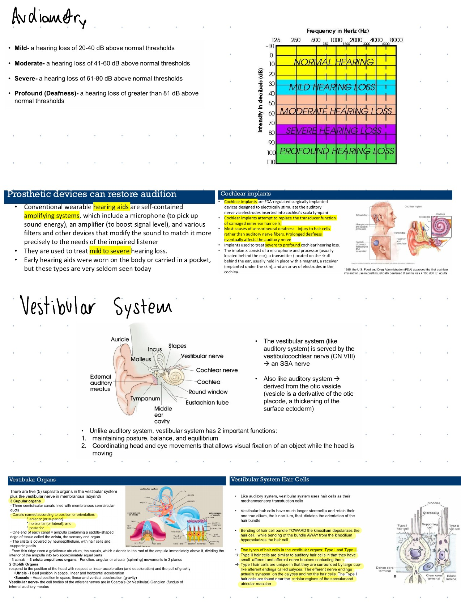
Neuroscience.pdf [summary] · p.50 · tap to enlarge · this page also appears under Vestibular system
Audiometry
- Mild 20–40 dB above normal thresholds; moderate 41–60; severe 61–80; profound (deafness) > 81 dB; audiogram 125–8000 Hz vs intensity (dB).
Prosthetic devices
- Hearing aids: self-contained amplifying systems (microphone, amplifier, filters) for mild to severe loss. Cochlear implants: FDA-regulated implanted electrodes in the scala tympani stimulate the auditory nerve — replace the transducer function of damaged inner-ear hair cells (most sensorineural deafness is hair-cell injury; prolonged deafness eventually affects the nerve); for severe to profound loss; microphone / processor behind the ear, transmitter on the skull (magnet), implanted receiver, electrode array; first FDA approval 1985 for post-linguistically deafened adults (> 100 dB HL).
⭐ Will be testedMild 20–40, moderate 41–60, severe 61–80, profound > 81 dB; hearing aids for mild–severe, cochlear implant (electrodes in the scala tympani) for severe–profound.
Vestibular system4 pages
p.50rest of the pageVestibular system · vestibular organs · hair cellsVestibular system
Neuroscience.pdf [summary] · p.50 · tap to enlarge · this page also appears under Auditory system / Vestibular system
Vestibular system
- Served by CN VIII (SSA); derived from the otic vesicle (otic placode, surface ectoderm); two functions: 1 posture, balance, equilibrium; 2 coordinating head and eye movements for visual fixation while the head moves.
Vestibular organs
- Five organs plus the vestibular nerve in the membranous labyrinth. 3 cupular organs — semicircular canals (anterior / superior, horizontal / lateral, posterior) each with an ampulla containing the crista covered by neuroepithelium (hair cells + supporting cells) and the gelatinous cupula; = 3 crista ampullares organs for angular / spinning movements in 3 planes. 2 otolith organs respond to head position, linear acceleration and gravity: utricle (horizontal), saccule (vertical). Cell bodies of the vestibular nerve in Scarpa's ganglion (fundus of the internal auditory meatus).
Vestibular system hair cells
- Mechanosensory transduction cells with longer stereocilia and one true cilium, the kinocilium, which dictates bundle orientation; bending TOWARD the kinocilium depolarises, AWAY hyperpolarises. Type I hair cells: surrounded by cup-like afferent calyces, efferents synapse on the calyx, found near the striolar regions of the maculae; type II: small afferent and efferent boutons like auditory hair cells.
Handwritten on this page- 'Audiometry' and 'Vestibular System' section headings only.
⭐ Will be testedBending toward the kinocilium depolarises; utricle horizontal, saccule vertical; Scarpa's ganglion in the IAM; type I hair cells sit in calyces near the striola.
p.51Utricle & saccule · semicircular canals · vestibular nuclei projections · VOR · vestibulospinal tractsVestibular system
Utricle & saccule
- Otoconia on the otolithic membrane over the macula (striola, kinocilium k, stereocilia s); utricle oriented horizontally, saccule vertically → utricle detects linear acceleration in the horizontal plane, saccule in the vertical plane (gravity sensor).
Semicircular canal ampullary organs
- 3 canals — half-circle tubes of endolymph, both ends opening into the utricle; one end enlarged = ampulla containing hair cells in the ridge-like crista ampullaris under the cupula; angular acceleration displaces the cupula; canals sense the rotational position of the head.
Canal orientation
- Horizontal canals tilted ~30°; left / right anterior canals and posterior canals at 45° to the sagittal plane so each anterior canal pairs with the contralateral posterior canal.
Vestibular nuclei projections
- Through the ascending MLF to the ocular motor nuclei (III, IV, VI) → vestibulo-ocular reflexes; through the descending MLF and lateral vestibulospinal (Deiters') tract to ventral-horn motor neurons → postural reflexes; also vestibulothalamic tracts → ventral posterior nucleus → vestibular cortex; juxtarestiform body to the nodulus of the cerebellum.
Vestibulo-ocular reflex — two pathways
- Vertical eye movement: semicircular canals → superior vestibular nucleus → MLF → trochlear and oculomotor nuclei. Horizontal eye movement: semicircular canals → medial vestibular nucleus → abducens nucleus → MLF → oculomotor nucleus. Hand-drawn circuit: LVN → R abducens / RVN → L abducens with crossed connections to the LMR / RMR (medial recti) and LLR / RLR (lateral recti).
Vestibular descending pathways
- Lateral vestibulospinal: from the lateral vestibular nucleus, descends ipsilaterally (uncrossed) to ventral-horn neurons of antigravity muscles in cervical and lumbar cord → facilitates antigravity (extensor) tone for upright posture. Medial vestibulospinal: from the medial vestibular nucleus, descends bilaterally in the descending MLF to cervical ventral horn → adjusts head and neck position in response to vestibular stimulation.
Handwritten on this page- 'Anything that isn't up & down, left or right' (canals).
- 'Abducens is not part of MLF'; 'Two pathways'; 'vertical eye movement' / 'horizontal eye movement'.
⭐ Will be testedSVN → vertical VOR (III / IV); MVN → horizontal VOR (VI → III); lateral VST = extensor tone.
p.52Caloric testing · doll's-eye reflex · nystagmus · vertigo · vestibular schwannoma · BPPV · brainstem VOR mapVestibular system
Caloric testing of patients in a coma
- Cold and warm water irrigation (COWS — cold opposite, warm same for the fast phase in a conscious patient); panel: conscious normal vs unconscious with brainstem intact, MLF lesion (bilateral), low brainstem lesion.
Doll's eye reflex (oculocephalic)
- Hold the eyelids open and briskly rotate the head side to side. Positive: eyes move opposite to the rotation and stay looking forward = intact brainstem. Negative: eyes move with the head = severe brainstem dysfunction; an oversimplification — some nystagmus can occur pathologically. Suppressed in a conscious adult with normal neurology; active in a comatose patient with gross brainstem function; absent if the reflex arc is damaged.
Nystagmus
- Without any motion in the visual field = lesion of the brainstem or cerebellum. Pendular: fast-phase saccades in both directions. Jerk: slow drift one way, fast saccade the other; named for the saccade direction ('leftward-beating').
Vertigo
- Illusion of spinning without actual movement, with nausea, vomiting, tinnitus, nystagmus, gait ataxia; debilitating. Peripheral (membranous labyrinth / semicircular ducts): more severe, intermittent, short, positional, more common (80 %), stops with visual fixation. Central (brainstem vestibular nuclei / pathways): mild, chronic, non-positional, does not stop with fixation.
Vestibular schwannoma
- Acoustic neuroma / neurinoma / neurilemoma — benign slow-growing tumour of the vestibulocochlear nerve from over-production of Schwann cells (the 'onion-skin' wrap of nerve fibres); unilateral / asymmetric hearing loss, tinnitus, dizziness; can compress the trigeminal (facial numbness) and facial nerve (weakness / paralysis on the side of the tumour); large tumours press brainstem and cerebellum — life-threatening.
Benign paroxysmal positional vertigo (BPPV)
- Brief episodes of mild-to-intense dizziness, usually > 50 years, triggered by head-position changes (tipping, lying down, turning in bed); rarely serious except for falls; otoconia dislodged from the utricle / saccule float into a semicircular canal, stick in the cupula, add weight → abnormal canal stimulation; treated by the Epley manoeuvre driving the otolith back into the utricle / saccule.
Brainstem VOR map
- Oculomotor nuclear complex and trochlear nucleus (midbrain); abducens nucleus, SVN, LVN (pons); MVN, IVN, lateral vestibulospinal tract, MLF descending fibres (medulla) → cervical cord for head position, extensor motor neurons; inputs from the ampullae, utricle and saccule maculae; branch to cerebellum.
Handwritten on this page- 'COWS'; 'Dolls eye reflex'.
- 'VII, VIII sometimes V' beside the schwannoma text.
- 'Mid-brain / Pons / Medulla' with dashed lines across the VOR figure.
⭐ Will be testedPositive doll's eyes = brainstem intact; peripheral vertigo suppresses with fixation; CPA tumour hits VIII → V → VII.
p.53top of the pagePeripheral vertigo — tableVestibular system

Neuroscience.pdf [summary] · p.53 · tap to enlarge · this page also appears under Vestibular system / Clinical correlates & sleep
Peripheral vertigo — table
- BPPV: dislodged otoconia in the semicircular canals; < 1 min episodes worsened by head movement; clinical + Dix-Hallpike; Epley (canalith repositioning).
- Vestibular neuritis: inflammatory reaction of the vestibular nerve; continuous, worse with head movement, recent URI (+ hearing loss if labyrinthitis); clinical; supportive.
- Ménière disease: endolymph accumulation; minutes to hours, episodic, tinnitus, unilateral hearing loss; clinical + audiometry; acute vestibular suppressants.
- Acoustic neuroma: benign Schwann-cell tumour at the cerebellopontine angle; progressive worsening, tinnitus, unilateral hearing loss ± CN V3 / VII involvement; MRI with contrast; supportive vs surgical / radiation.
⭐ Will be testedDix-Hallpike → Epley; Ménière = endolymph; CPA schwannoma on contrast MRI.
Clinical correlates & sleep3 pages
p.53rest of the pageMSA · CRPS · Riley-Day · floppy infantClinical correlates & sleep
Neuroscience.pdf [summary] · p.53 · tap to enlarge · this page also appears under Vestibular system
Multiple system atrophy (clinical reasoning)
- Formerly Shy-Drager: parkinsonism (bradykinesia + rigidity and / or tremor), autonomic failure, cerebellar ataxia, pyramidal signs in varying combinations.
Complex regional pain syndrome
- After injury; Type I reflex sympathetic dystrophy (RSD, Sudeck's atrophy) — no apparent nerve damage; Type II causalgia — nerve damage present. Localised intense burning pain, sensitivity to the slightest vibration or touch, oedema, skin colour and temperature changes; hand or foot, often distant from a healed wound; atrophy of skin and subcutaneous tissue then bone. Pathogenesis unclear (NMDA?): hypothesis of electrical 'crosstalk' (ephapse) → sympathetic hyperactivity; management complex and often ineffective. Photos A / B of the feet.
Familial dysautonomia (Riley-Day)
- Rare recessive mutation on chromosome 9, Eastern European Jewish ancestry; from birth: hypotonia, absent / decreased deep tendon reflexes, impaired pain and temperature sensation, lack of tears, defective temperature control, intestinal dysfunction, blood-pressure lability; always check hypotonia in the newborn; 50 % reach age 30.
Differential of floppy infant syndrome
- CNS: kernicterus, perinatal asphyxia, cerebral palsy (atonic), chromosomal anomalies incl. Down's. Spinal cord: anterior horn disease, spinal muscular atrophy. Peripheral nerves: acute polyneuropathy, familial dysautonomia, congenital sensory neuropathy. Myoneural junction: neonatal myasthenia gravis, infantile botulism, after antibiotics (botulism symptoms acute vs the others).
⭐ Will be testedMSA = parkinsonism + autonomic failure + cerebellar ataxia + pyramidal signs; CRPS type I no nerve injury (RSD), type II causalgia; Riley-Day = absent DTRs, no tears, hypotonic newborn.
p.54Summary of sleep stagesClinical correlates & sleep

Neuroscience.pdf [summary] · p.54 · tap to enlarge
Sleep stages (% of total sleep time, young adults)
- Awake (eyes open): alert, active concentration — beta (highest frequency, lowest amplitude). Awake (eyes closed): alpha. Non-REM: N1 (5 %) light sleep — theta; N2 (45 %) deeper, bruxism ('twoth' grinding) — sleep spindles and K complexes; N3 (25 %) deepest / slow-wave, sleepwalking, night terrors, bedwetting ('wee and flee in N3') — delta (lowest frequency, highest amplitude). REM (25 %): loss of motor tone, ↑ brain O₂ use, variable pulse / BP, ↑ ACh; dreaming, nightmares, penile / clitoral tumescence; memory processing; extraocular movements from the PPRF; every 90 min, duration ↑ through the night — beta.
- Elderly: ↓ REM, ↓ N3. Depression: ↑ REM time, ↓ REM latency, ↓ N3, repeated awakenings, early-morning awakening (terminal insomnia). Narcolepsy: ↓ REM latency. 'At night, BATS Drink Blood' (beta-alpha-theta-spindles-delta-beta).
Handwritten on this page- Highlighted waveforms: beta, alpha, theta, sleep spindles and K complexes, delta, beta.
⭐ Will be testedBATS Drink Blood; REM eye movements come from the PPRF; N3 = parasomnias.
p.55Blank pageClinical correlates & sleep
Neuroscience.pdf [summary] · p.55 · tap to enlarge
Blank
- Dot-grid page with no content (kept so page numbering matches the PDF).
CNS blood supply & stroke syndromes · continued3 pages
p.56Lateral vs medial vessel grid (back-page summary)CNS blood supply & stroke syndromes
Lateral vs medial brainstem arteries by level
- Midbrain (3, 4): lateral PCA · medial —. Pons (5, 6, 7, 8): lateral AICA · medial basilar. Medulla (9, 10, 11, 12): lateral PICA · medial anterior spinal artery. Medial CN: 3, 4, 6, 12.
Handwritten on this page- The whole page is handwritten: the 2 × 3 vessel grid with 'Midbrain 3,4 / Pons 5,6,7,8 / Medulla 9,10,11,12' and 'Med CN 3, 4, 6, 12'.
⭐ Will be testedMedial nerves divide into 12; medial syndromes = ASA / paramedian basilar, lateral = PICA / AICA / PCA.
Nothing matches that search.